2026.05.27 Satellite卫星系统新增高亮和取消高亮方法
-
Satellite新增方法如下：
- highlight() 打开指定卫星的缩略图的高亮效果
- unHighlight() 取消指定卫星缩略图的高亮效果
- unHighlightAll() 取消所有卫星缩略图的高亮效果
2026.05.22 Weather天气对象新增方法、Satellite卫星系统新增方法
-
Weather新增设置大气环境的瑞利散射系数方法如下：
- setRayleighScatter(rayleighScatter) 设置大气环境的瑞利散射系数
-
Satellite新增方法如下：
- addLinkage(data) 添加卫星之间的连接线，卫星运动时连接线会跟随同步运动
- updateLinkage(data) 更新卫星连接线的参数配置
- deleteLinkage(data) 删除指定的卫星连接线
- clearLinkage(data) 清空卫星之间的连接线
2026.05.12 多边形对象Polygon新增填充透明渐变样式和参数
-
Polygon新增参数如下：
- gradualWidth (number) 透明渐变的间隔宽度，单位：米，默认值：10
- outerAlpha (number) 多边形填充的透明度渐变的起始值，取值范围：[0~1]，默认值：0.3
- innerAlpha (number) 多边形填充的透明度渐变的结束值，取值范围：[0~1]，默认值：1
-
Polygon新增style样式枚举如下：
- AlphaGradualBorder 透明渐变边界
2026.05.09 Plot对象新增停止绘制方法、 VectorField对象新增子场参数
-
Plot对象新增停止绘制方法stopDraw()
- stopDraw() 停止绘制Plot
-
VectorField对象新增子场参数如下：
- spawnLineRate (number) 每个线条上每秒生成的粒子数量
- spawnLineCap (number) 每个线条上粒子的最大数量
2026.05.08 新增引导线GuideLine对象及操作方法
-
引导线GuideLine对象新增操作方法如下
- add() 添加引导线
- update() 更新引导线
- clear() 清空引导线
- focus() 定位引导线
- hide() 隐藏引导线
- show() 显示引导线
- delete() 删除引导线
- get() 查询引导线
2026.04.28 Polyline对象新增贴合模型方法
-
新增方法如下：
- attachObject(array) 设置一个或多个Polyline对象的起点和终点跟随对应的模型移动
2026.04.27 向量场VectorFiled对象新增支持子场的系列参数
-
新增子场subFields包含的参数如下：
- renderSphereOutRadius (array) 子场渲染的粒子发射器的外径
- renderSphereInnerRadius (array) 子场渲染的粒子发射器内径
- startIndex (number) 父场repeatcount参数中该子场区域使用的粒子发射器数量的起始索引，剩下的粒子发射器影响父场
- endIndex (number) 父场repeatcount参数中该子场区域使用的粒子发射器数量的结束索引，剩下的粒子发射器影响父场
- singleSpriteSize (number) 子场的单个粒子大小，单位米，影响粒子大小
- lodMin (number) 子场包含粒子大小的最小缩放比例，默认值：0.6，影响粒子大小
- lodMax (number) 子场包含粒子大小的最大缩放比例，默认值：2.0，影响粒子大小
- spawnRate (number) 子场粒子每秒生成的速率，影响粒子数量
- spawnRateMin (number) 子场近距离粒子的生成速度，影响粒子数量
- spawnRateMax (number) 子场远距离粒子的生成速度，影响粒子数量
- spawnRatePower (number) 子场粒子的密度变化曲线，即按距离插值时使用指数函数，设置指数函数的N次方，影响粒子数量
- lodMaxDistance (number) 子场粒子大小的最大缩放距离，即从[0~lodMaxDistance]映射到[lodMin~lodMax]对粒子大小进行缩放，注意：举例若超过此值则使用lodMax进行缩放，影响粒子大小
- lodMinDistance (number) 子场粒子大小的最小缩放距离，即从[0~lodMinDistance]映射到[lodMin~lodMax]对粒子大小进行缩放，注意：若小于此值则使用lodMin进行缩放，影响粒子大小
- lifeTime (number) 子场粒子的生命周期，即粒子存活时间，单位：秒，影响粒子长度
- lifeTimeMinScale (number) 子场粒子生命周期的缩放因子范围的最小值
- lifeTimeMaxScale (number) 子场粒子生命周期的缩放因子范围的最大值
2026.04.17 CustomObject对象新增拆分楼层方法、SmoothedParticleHydrodynamics对象新增支持vtk文件和bin文件添加方法、新增海岸线Coastline对象及操作方法
-
CustomObject对象新增拆分楼层方法如下
- cutFloor(obj) 把一个CustomObject类型的楼宇模型按层高拆分为若干个指定的楼层，注意：仅支持CustomObject类型的楼宇模型
-
SmoothedParticleHydrodynamics对象新增支持vtk和bin文件加载方法
- addByBin(data) 根据bin文件添加sph
- addByVtk(data) 根据vtk文件添加sph
-
海岸线Coastline对象新增操作方法如下
- add() 添加海岸线
- update() 更新海岸线
- clear() 清空海岸线
- focus() 定位海岸线
- hide() 隐藏海岸线
- show() 显示海岸线
- delete() 删除海岸线
- get() 查询海岸线
2026.04.02 Tools对象新增河道横断面分析方法
-
新增河道横断面分析方法如下
- riverCrossSectionByShp(option) 根据河道的shp文件和tif高程对河道横断面进行分析
- riverCrossSection(option) 根据河道的坐标点和tif高程对河道横断面进行分析
2026.03.31 Settings对象新增方法、Plot对象新增方法
-
Settings新增设置VTPK标注的深度检测的相机高度阈值方法
- setLabelLayerDepthTestHeight(height) {number} depthTestHeight 深度检测的相机高度阈值，高于此高度时深度检测失效，默认值：2000米，单位：米
-
Plot对象新增根据ID获取Plot对象的描边坐标集合方法
- getStrokeCoordinates(ids) {string|array} ids 要获取的Plot对象ID或者ID数组（可以获取一个或者多个）
2026.03.25 GeoJsonLayer对象新增控制自定义材质底面和顶面是否绘制参数
-
GeoJsonLayer对象新增参数
- generateTop (boolean) 可选参数，是否生成顶面，默认：true
- generateBottom (boolean) 可选参数，是否生成底面，默认：true
2026.03.20 态势标绘制对象新增绘制方法startDraw()、Hydrodynamic2d更新方法新增参数
-
根据鼠标交互获取到坐标值创建对象
- startDraw(plot) 进入标绘对象的手工绘制模式，
-
新增两类样式枚举，自由绘制线和面
-
FreehandLineString 自由线绘制：从鼠标左键按下不松开然后光标开始移动进行绘制线段，光标经过的所有坐标位置按顺序连成线，直到松开鼠标左键结束绘制。
-
FreehandPolygon 自由面绘制：从鼠标左键按下不松开然后光标开始移动进行绘制平面，光标经过的所有坐标位置首尾闭合绘制成面，直到松开鼠标左键结束绘制
-
-
Hydrodynamic2d对象update()更新方法新增参数
- vertexWaterDepth (boolean) 是否根据顶点水深插值，默认值：true
2026.03.14 Tools测量方法新增测量单位和坐标支持
-
Tools设置测量方法新增以下参数
- unitType (number) 单位 0：米 1：千米 2：英尺，默认值 0
- coordinates (array) 待测量坐标数组，不传则根据交互拾取的坐标进行测量
2026.03.13 卫星仿真对象Satellite新增操作方法
-
Satellite对象新增如下方法：
- setFollow() 设置相机跟随卫星移动
- showSatellite() 显示卫星模型及文字标签
- hideSatellite() 隐藏卫星模型及文字标签
- showText() 显示卫星文字标签
- hideText() 隐藏卫星文字标签
- showModel() 显示卫星模型
- hideModel() 隐藏卫星模型
2026.03.05 Weather天气对象新增设置太阳颜色方法
-
Weather对象新增setSunColor(color)方法
- setSunColor() (color) 自定义太阳颜色
- setSunColor() (color) 自定义太阳颜色
2026.03.04 球面工程Weather天气对象新增以下方法
-
Weather对象新增以下三个方法
- setEarthCloudIntensity() (number) 设置地球大气云层的亮度，取值范围：[0~1]，设置0则隐藏云层
- setEarthNightLightIntensity() (number) 设置地球夜晚灯光的亮度，取值范围：[0~1]，设置0则关闭灯光
- setEarthStarBackgroundIntensity() (number) 设置星空背景的亮度，取值范围：[0~1]，设置0则关闭星空背景亮度
2026.02.11 新增卫星仿真对象Satellite及操作方法、Cesium3DTileset对象新增属性
-
Satellite对象新增如下方法：
- add() 添加卫星
- update() 更新卫星
- clear() 清空卫星
- focus() 定位卫星
- callBPFunction() 调用卫星模型的蓝图函数
- getBPFunction() 查询卫星模型的蓝图函数
-
Cesium3DTileset对象新增是否参与光照属性
- enableLighting (boolean) 可选，服务是否参与光照，默认值：true
- enableLighting (boolean) 可选，服务是否参与光照，默认值：true
2026.02.02 Tools下测量方法新增角度测量
-
新增角度测量枚举：
- Angle (number) 7 角度测量 返回测量的角度
2026.01.28 视频投影对象VideoProjection新增属性、Vehicle2新增设置视口可见性方法
-
新增如下属性：
- screen (boolean) 是否显示投影幕布，默认值：false
- screenDistance (number) 投影幕布的显示距离，单位：米，默认值：100米
-
Vehicle2新增设置视口可见性方法
- setViewportVisible() 多视口状态下，设置Vehicle2对象在各视口的可见性
2026.01.12 GlobeTerrain对象新增属性
-
新增如下属性：
- alpha (number) 可选，球面网络图层的透明度，取值范围：[0,1]
- bConvertSRGB (boolean) 可选，球面网络图层服务加载时颜色效果是否开启RGB模式转换为SRGB，默认值：true
2026.01.09 Polyline和Polygon对象新增arcType属性
-
Polyline和Polygon对象新增如下属性：
- arcType (number) 球面地形下绘制贴地弧线的类型，0：劣弧 1：优弧，默认值：0
2025.12.25 无人机Drone对象新增轨迹线和灯光秀属性
-
无人机Drone对象新增如下属性：
- trailType (number) 可选，轨迹线类型，取值范围：[0,1,2]，0:无轨迹 1：拖尾效果 2：条带效果，默认值：0
- trailColor (Color) 可选，轨迹线颜色
- trailDuration (number) 可选，轨迹持续时间，单位：秒，默认值：0
- lightColor (Color) 可选，灯光秀颜色
2025.12.24 Settings对象新增方法、Marker对象设置聚合样式方法新增参数
-
Settings对象新增设置网络图层服务的裂分等级的偏移量方法
- setImageryLayerLevelOffset(LevelOffset) 设置网络图层服务的裂分等级的偏移量，如果图层服务当前某处的裂分等级为6级，参数设置为1则当前图层服务的裂分等级增加1变为7级。
-
Marker对象setClusterStyle(style)方法新增参数
- enableAnimation (boolean) 是否开启marker聚合时的透明渐变动画，默认值：true
2025.12.23 GeoJSONLayer对象新增根据属性高亮要素的操作方法
-
GeoJSONLayer对象新增操作方法如下：
- highlightFeatureByProperty() 根据要素包含的属性字段名称和对应的值来高亮GeoJSONLayer图层对象内部对应的要素区域
- unHighlightFeatureByProperty() 根据要素包含的属性字段名称和对应的值来取消高亮GeoJSONLayer图层对象内部对应的要素区域
2025.12.16 Settings对象新增设置VTPK标注的符号化设置方法
-
设置VTPK标注的符号化配置参数方法如下
- setLabelLayerScaleRatio(scale) 设置VTPK标注的缩放显示百分比
- setLabelLayerLineSpace(lineSpace) 设置VTPK线性标注的间隔
- setLabelLayerSymbolAvoidance(type) 设置VTPK标注符号避让方式
2025.12.12 球面GlobeTerrain新增操作方法
-
设置更新初始化加载的影像服务、新增全参数图层服务
- setImagery(imageryUrl, imageryResourceUrl) 设置更新初始化加载的影像服务
- setImageryBySchemaParams(option) 根据自定义参数的图层服务来更新初始化球面加载的影像服务
- addImageryLayerBySchemaParams(obj) 根据自定义参数添加球面网络地图服务，如WMTS/WMS/MVT/TMS服务等网络图层服务
2025.12.09 相机Camera对象支持按顺序播放多个导览，查询导览列表接口返回导览所在目录信息
-
按顺序播放多个导览、返回导览所在目录信息
- playAnimation(ids) 按传入索引序号的顺序播放一个或多个动画导览
- getAnimationList 返回新增foldername属性 导览所在文件夹名称 acp工程内全局唯一
2025.11.27 新增光滑粒子流体动力学仿真对象(SmoothedParticleHydrodynamics)及相关操作方法
-
SmoothedParticleHydrodynamics对象新增如下方法：
- add() 添加SmoothedParticleHydrodynamics对象
- update() 更新SmoothedParticleHydrodynamics对象
- clear() 清空SmoothedParticleHydrodynamics对象
- show() 显示SmoothedParticleHydrodynamics对象
- hide() 隐藏SmoothedParticleHydrodynamics对象
- delete() 删除SmoothedParticleHydrodynamics对象
- get() 查询SmoothedParticleHydrodynamics对象
- focus() 定位SmoothedParticleHydrodynamics对象
2025.11.21 新增GlobeTerrain类，包含球面坐标系下Cesium球面地形影像服务的相关操作方法、ImageryLayer2新增设置图层顺序方法
-
GlobeTerrain对象新增如下方法：
- init() 初始化Cesium球面的地形和影像
- destroy() 销毁Cesium球面的地形和影像
- show() 显示Cesium球面的地形和影像
- hide() 隐藏Cesium球面的地形和影像
- addImageryLayer() 添加Cesium球面的图层服务，支持类型包含WMS、WMTS、MVT和TMS
- deleteImageryLayer() 删除图层服务
- clearImageryLayer() 清空图层服务
- setImageryLayerDrawOrder() 设置图层服务的顺序
-
ImageryLayer2对象新增如下方法：
- setDrawOrder() 设置图层服务的顺序
2025.11.18 高级载具Vehicle2对象更新方法支持更新载具颜色
-
update方法新增支持以下参数
- color 可选，载具自定义涂装颜色，注意：若传入此颜色参数会覆盖掉内置的涂装颜色（colorType）
2025.11.06 海洋热力图新增海浪样式枚举OceanHeatMapStyle
-
新增波浪样式枚举
- Arrow() 箭头样式
- Flow() 流场样式
- Wave() 波浪样式
2025.11.04 GeoJSONLayer对象新增参数、新增无人机Drone对象及相关操作方法
-
无人机Drone对象新增如下方法：
- add() 添加无人机Drone
- update() 更新无人机Drone
- clear() 清空无人机Drone
- show() 显示无人机Drone
- hide() 隐藏无人机Drone
- delete() 删除无人机Drone
- get() 查询无人机Drone
- moveTo() 无人机Drone运动
- focus() 定位无人机Drone
-
GeoJSONLayer对象新增深度检测和反走样参数
- depthTest (boolean) 是否做深度检测，默认开启：true，true会被遮挡，false不会被遮挡
- enableAntialias (boolean) 是否开启反走样，默认开启：true
2025.10.24 向量场VectorField对象新增bDynamicRenderBound参数
-
向量场VectorField对象新增bDynamicRenderBound参数
- bDynamicRenderBound (boolean) 是否动态计算渲染范围，默认：false
2025.10.23 CustomObject、 GeoJSONLayer、SplineMesh新增参数
-
CustomObject对象下的addByTileLayer()方法新增visible参数
- visible (boolean) 可选，复制模型完成后是否显示，默认：true
-
GeoJSONLayer对象新增标注字体大小和颜色属性
- textColor (Color) 可选，文字标注的字体颜色，默认颜色：[1,1,1,1]
- textSize (number) 可选，文字标注的字体大小，默认大小：24
-
SplineMesh新增meshPath参数
- meshPath (string) 可选(和style二选一)，路径模型自定义样式的打包路径，注意：若传入此路径会自动覆盖style样式
2025.10.20 新增OceanHeatMap海洋热力图对象
-
新增以下操作方法
- add() 添加对象
- update() 更新对象
- clear() 清空对象
- show() 显示对象
- hide() 隐藏对象
- delete() 删除对象
- get() 查询对象
2025.10.14 向量场VectorField对象新增fileOrder参数
-
向量场VectorField对象新增fileOrder参数
- fileOrder (number) 向量场数据加载bin/tif文件的堆叠顺序，0：正向堆叠（0~z层） 1：反向堆叠（z~0层）
2025.10.09 三维热力图对象新增billboards参数
-
HeatMap3d新增billboards参数
- billboards (object) 三维热力图对象始终朝向相机（广告牌效果），仅体素模式下displayMode=1生效，包含参数如下： scale (number) 面向屏幕的缩放值
2025.09.16 SplineMesh对象增加按组操作方法
-
新增按组操作方法如下：
- 增加showByGroupId()方法
- 增加hideByGroupId()方法
- 增加deleteByGroupId()方法
2025.09.15 Settings对象新增设置鼠标悬浮和移动事件返回的时间间隔方法
-
新增设置鼠标悬浮和移动事件返回的时间间隔方法
- setMouseHoverTime(time) 设置鼠标悬浮事件返回的时间间隔
- setMouseMoveTime(time) 设置鼠标移动事件返回的时间间隔
2025.09.05 三维热力图对象新增执行盒子剖切时是否裁切体素参数
-
HeatMap3d新增clipVoxel参数
- clipVoxel (boolean) 三维热力图执行盒子剖切时是否裁切体素(displayMode:1)，默认值：true
2025.08.26 Camera对象的playAnimation()方法新增mask参数
-
Camera对象的playAnimation()方法新增mask参数
- mask (number) 可选，播放动画导览时生效的工程配置掩码类别，支持组合设置。请参考
AnimationMask
- mask (number) 可选，播放动画导览时生效的工程配置掩码类别，支持组合设置。请参考
2025.08.22 TileLayer对象的setPointCloudStyle方法新增仅线框显示
-
TileLayer对象的setPointCloudStyle方法新增仅线框显示
- renderBoxWireframe (number) 盒子模式下是否显示线框，取值：[0,1,2]，0不显示 1显示 2仅显示线框（隐藏面）
2025.08.21 向量场VectorField对象新增参数、高斯泼溅GaussianSplatting对象新增碰撞参数、CustomObject对象focus()方法新增offset参数、HeatMap3D对象新增opacityMaskClip参数
-
向量场VectorField对象新增粒子发射器头部粒子的亮度控制参数
- headBrightness (number) 粒子发射器头部粒子的亮度缩放值，默认值：1，值越大发射器头部的粒子越亮
-
高斯泼溅GaussianSplatting对象新增碰撞参数
- collision (boolean) 可选，模型加载后是否开启碰撞，默认值：false
-
CustomObject对象focus()方法新增offset参数
- offset (array) 可选参数，相机视角的偏移量，取值示例：[X, Y, Z]，分别是三个方向的偏移量，单位：米
-
HeatMap3D对象新增opacityMaskClip参数
- opacityMaskClip (number) 三维热力图clipbox剖切支持的透明度阈值，色带colors参数内配置的颜色透明度值如果大于此值则进行剖切
-
Marker对象新增autoHideText参数
- autoHideText (boolean) 打开弹窗时是否自动隐藏文字，默认值：true
2025.08.12 Tools对象新增打开测量和剖切面板方法
-
新增以下方法
- showMeasurePanel(type, screenPosition) 新增打开测量功能面板
- showClipPanel(type, screenPosition) 新增打开剖切功能面板
2025.08.11 三维热力图对象新增包围盒线框颜色参数、视频投影对象新增曝光度参数
-
HeatMap3d新增包围盒线框颜色参数boundsColor
- boundsColor (array) 三维热力图的包围盒1px边框的颜色，默认不显示，取值示例如白色线框：[1,1,1,1]
-
VideoProjection新增曝光度参数
- exposure (number) 曝光度，取值范围：[0~3]，默认值：0.6
2025.07.29 HydroDynamic2D二维水动力对象新增动态箭头配置相关参数、 Settings设置对象新增方法
-
新增动态箭头配置参数
-
arrowVisibleDistance (number) 可选参数，动态箭头显示的最大距离，单位：米
-
dynamicArrow (number) (object) 可选参数，动态箭头的配置参数对象如下：
numArrows (number) 箭头数量
speedFactor (number) 速度因子
sizeScale (number) 尺寸缩放因子
-
-
Settings设置对象新增方法
- setPlayerName(name,size) 联网模式（会议室）下设置角色漫游和无人机漫游模式时模型上方显示的角色名称
2025.07.21 三维热力图Heatmap3D对象新增预加载和播放、暂停等方法
-
新增load和play、pause和setTime方法
- load(obj) 预加载多个tif文件构成的三维热力图动画
- play(id) 执行播放三维热力图动画
- pause(id) 暂停播放三维热力图动画
- setTime(id,startTime) 设置从第几秒开始播放三维热力图动画
2025.07.18 FiniteElement2有限元仿真对象新增过滤器相关操作方法
-
新增以下方法
- applyContourFilter() 根据等值线的数值添加过滤器并展示过滤后的有限元模型分析结果
- applyPlaneClipFilter() 切面过滤器
- applyBoxClipFilter() 盒子过滤器
- applySphereClipFilter() 球型过滤器
- applyCylinderClipFilter() 圆柱体过滤器
2025.07.10 FiniteElement2有限元仿真对象新增过滤器相关操作方法
-
新增以下3个方法
- applyThresholdFilter() 根据属性字段的区间值添加过滤器并展示过滤后的有限元模型分析结果
- removeFilter() 移除指定的有限元模型对象添加的相关过滤器
- clearFilter() 清空指定的有限元模型对象添加的所有过滤器
2025.07.05 图层TileLayer对象新增方法
-
TileLayer对象新增以下3个方法
- highlightActorWithColor() 使用颜色去高亮一个Actor，支持设置不同的高亮颜色去高亮不同的Actor
- highlightActorsWithColor() 使用颜色去高亮多个Actor，支持设置不同的高亮颜色去高亮不同的Actor
- unHighlightAllPoints() 取消高亮点云包含所有点的高亮效果
2025.07.01 FiniteElement2有限元仿真对象新增箭头符号化参数
-
新增箭头参数arrow
- field (string) 使用此属性字段名称对应的值符号化显示箭头
- sizeScale (number) 可选，箭头尺寸
- colorField (string) 颜色属性字段名称
- lengthScale (number) 可选，箭头长度缩放值
- colorComponent (string) 颜色属性字段对应的分量名称
2025.06.26 自定义对象CustomObject和样条线对象SplineMesh新增参数
-
CustomObject新增曲线差值类型和差值分段数量参数
- curveType (number) 可选，路径模型绘制时曲线的插值类型，取值范围：[0,1]，默认值：0
- segment (number) 可选，路径模型的绘制时曲线的插值的分段数量，默认值：10
-
SplineMesh对象新增曲线差值类型和差值分段数量参数
- curveType (number) 可选，路径模型绘制时曲线的插值类型，取值范围：[0,1]，默认值：0
- segment (number) 可选，路径模型的绘制时曲线的插值的分段数量，默认值：10
2025.06.24 新增FiniteElement2有限元仿真对象
-
新增以下方法
- add() 添加对象
- update() 更新对象
- clear() 清空对象
- show() 显示对象
- hide() 隐藏对象
- delete() 删除对象
- get() 查询对象
2025.06.19 ImageryLayer2球面图层服务增加参数
-
新增颜色效果转换参数
- bConvertSRGB (boolean) 可选，球面网络图层服务加载时颜色效果是否开启RGB模式转换为SRGB，默认值：true
2025.05.29 有限元对象新增特征线信息参数
-
新增特征线参数
- filePath (string) 包含特征线信息的文件路径
- color (Color) 特征线的颜色
2025.05.22 ImageryLayer2对象新增方法
-
ImageryLayer2对象新增add方法
- addByUrl(data) 根据图层服务的xmlPath添加一个或多个球面网络地图服务
- addBySchemaParams(data) 根据图层服务的自定义参数添加一个或多个球面网络地图服务
2025.05.21 Settings对象新增方法查询和设置自定义的人物角色模型和无人机模型
-
查询和设置自定义的人物角色模型和无人机模型
- setCharacterAssetPath(assetPath) 人物漫游模式下，设置自定义的无人机模型
- getCharacterAssetPath() 查询当前工程已经挂载的pak文件包含的自定义的角色模型路径
- setDroneAssetPath(assetPath) 无人机漫游模式下，设置自定义的无人机模型
- getDroneAssetPath() 查询当前工程已经挂载的pak文件包含的自定义的无人机模型路径
2025.05.16 2D水动力模型对象新增水浪效果漫延的流速区间范围
-
新增流速影响水浪效果参数
- crestWaterSpeedRange (array) 可选，水浪效果漫延的流速区间范围，默认值：[0,1]，注意：和深度区间表现为叠加的效果，区间内的水流速度值越大浪头越来越明显
- crestWaterSpeedRange (array) 可选，水浪效果漫延的流速区间范围，默认值：[0,1]，注意：和深度区间表现为叠加的效果，区间内的水流速度值越大浪头越来越明显
2025.05.12 SplineMesh新增支持调用蓝图函数、Settings对象新增控制鼠标右键的点击拾取及Polygon3D新增支持深度检测、载具2新增标识牌显示配置参数
-
SplineMesh新增支持查询和调用蓝图函数方法
- getBPFunction(ids) 查询splineMesh包含的蓝图函数
- callBPFunction(data) 调用splineMesh包含的蓝图函数
-
Settings对象新增控制鼠标右键的点击拾取方法
- enableRightClickMousePick(enable) 控制鼠标右键的点击拾取，默认关闭
-
Polygon3D新增支持深度检测参数
- depthTest (boolean) 是否做深度检测，默认为true，true会被遮挡，false不会被遮挡，注意：非半透明材质不支持深度检测
-
载具2新增标识牌显示配置参数
- visible (boolean) 标识牌是否可见
- offset (array) 标识牌偏移
- text (string) 标识牌显示的字符串
2025.04.30 相机Camera对象新增导出正交投影图片接口
-
新增导出正交投影图片接口
- exportOrthoImage(path, imageSize, orthoWidth, location, rotation, backGroundColor） 根据传入的参数导出相机位置对应的正交投影图片
2025.04.23 新增BoxTrigger盒子热区范围对象，当customObject或camera进入和退出盒子热区范围则触发相关事件
-
新增以下方法
- add(data) 新增BoxTrigger盒子热区范围对象
- delete(id) 删除BoxTrigger盒子热区范围对象
- clear() 清空BoxTrigger盒子热区范围对象
2025.04.10 2D水动力模型对象新增流场样式及相关参数、球面网络图层新增透明度参数
-
新增流场样式和羽化参数
- alphaGradientDepthRange (array) 边缘羽化的水深范围，默认值：[0,2]，单位：米，对应的alpha区间为[0,1]，注意：仅在alphaMode=1时生效
-
球面网络图层新增透明度参数
- alpha (number) 球面网络图层的透明度，取值范围：[0,1]
2025.04.07 Tools分析工具可视域分析接口新增水平角和俯仰角参数
-
新增水平角和俯仰角参数
- 【yaw】 水平角，取值范围：[-180°~180°]，默认值：0
- 【pitch】 俯仰角，取值范围：[-90°~90°]，默认值：0
2025.03.21 Polyline对象增加1像素线宽样式枚举
-
OnePixelWidth：1像素线宽样式
2025.03.17 新增军事态势标绘对象Plot及相关操作方法
-
拓扑线对象新增如下方法：
- add() 添加Plot对象
- update() 更新Plot对象
- clear() 清空Plot对象
- show() 显示Plot对象
- hide() 隐藏Plot对象
- showAll() 显示所有Plot对象
- hideAll() 隐藏所有Plot对象
- delete() 删除Plot对象
- get() 查询Plot对象
2025.03.07 CustomObject对象focus()方法跟随模式新增枚举
-
新增枚举跟随世界的绝对朝向
- 跟随世界的绝对朝向： FollowWorldRotation
2025.02.28 Weather对象新增海浪效果设置和查询接口
-
新增setOceanWave和getOceanWave()接口
- setOceanWave(option) 设置海浪参数
- getOceanWave() 查询海浪参数
2025.02.21 新增拓扑线对象TopologyLine及相关操作方法
-
拓扑线对象新增如下方法：
- add() 添加拓扑线对象
- update() 更新拓扑线对象
- clear() 清空拓扑线对象
- show() 显示拓扑线对象
- hide() 隐藏拓扑线对象
- showAll() 显示所有拓扑线对象
- hideAll() 隐藏所有拓扑线对象
- delete() 删除超拓扑线对象
- get() 查询拓扑线对象
2025.02.20 新增超欠挖分析对象excavationAnalysis及相关操作方法
-
超欠挖分析对象新增如下方法：
- add() 添加超欠挖分析对象
- update() 更新超欠挖分析对象
- clear() 清空超欠挖分析对象
- show() 显示超欠挖分析对象
- hide() 隐藏超欠挖分析对象
- delete() 删除超欠挖分析对象
- get() 查询超欠挖分析对象
2025.02.14 图层对象setPointCloudStyle()方法新增lod参数
-
新增是否开启lod参数 默认值false
- (boolean) 是否开启lod，默认值：false
2025.01.21 TileLayer对象新增enableFluid()方法
-
设置图层对水流体对象Fluid的支持
- **enableFluid()** 设置图层对水流体对象Fluid的支持，注意：设置false不支持时则水流体的物理碰撞会忽略此图层
2025.01.16 热力图增加预加载和播放、暂停等方法
-
增加load和play、pause和setTime方法
- load(obj) 预加载多个tif文件，准备播放热力图动画
- play(id) 播放热力图动画
- pause(id) 暂停播放热力图动画
- setTime(id,startTime) 设置从第几秒开始播放
2025.01.15 向量场对象新增参数
-
新增speedPower参数
- **speedPower** (number) 粒子速度的幂次方，小于1则粒子速度变小，大于1则粒子速度变大。默认值：1，注意：场内粒子的速度差距比较大时才需要设置此参数
2025.01.14 新增gaussianSplatting对象及相关操作方法
-
高斯泼溅对象新增如下方法：
- add() 添加高斯泼溅对象
- update() 更新高斯泼溅对象
- clear() 清空高斯泼溅对象
- show() 显示高斯泼溅对象
- hide() 隐藏高斯泼溅对象
- delete() 删除高斯泼溅对象
- get() 查询高斯泼溅对象
2025.01.14 热力图对象HeatMap增加addByTif()方法
-
HeatMap增加addByTif()方法
- addByTif(heatMap) 通过tif文件添加热力图对象
2025.01.06 自定义对象CustomObject对象新增生长动画方法
-
CustomObjec增加showGrowth()方法
- showGrowth(data) 模拟从3dt中复制的CustomObject对象的生长动画效果
2024.12.30 热力图对象HeatMap增加高亮和取消高亮方法
-
增加highlightPixels()和unHighlightAllPixels()方法
- highlightPixels(id, pixelCoords) 高亮热力图指定的像素点
- unHighlightAllPixels(id) 取消热力图所有像素点高亮
2024.12.11 CustomObject对象新增参数
-
新增自动高度和碰撞参数
- **autoHeight** boolean 是否开启自动高度 开启后贴地不再使用坐标Z
- **collision** boolean 是否开启碰撞
2024.11.19 图层对象增加setPointCloudStyle()方法
-
图层对象增加setPointCloudStyle()方法
- setPointCloudStyle() 根据点云的属性值来设置点云模型的渲染颜色
2024.11.13 相机对象增加cancelFollow()方法
-
相机对象增加cancelFollow()方法
- cancelFollow() 取消自动跟随相机视角
2024.11.12 新增Vehicle2对象及相关操作方法
-
Vehicle2对象新增如下方法：
- add() 添加载具2对象
- update() 更新载具2对象
- clear() 清空载具2对象
- show() 显示载具2对象
- hide() 隐藏载具2对象
- delete() 删除载具2对象
- get() 查询载具2对象
- moveTo() 载具2对象运动
- focus() 定位载具2对象
- setFollow() 设置载具2对象相机跟随
2024.11.08 新增Train对象及相关操作方法
-
火车对象新增如下方法：
- add() 添加火车对象
- moveTo() 设置火车行驶
- pause() 暂停行驶
- resume() 恢复行驶
- show() 显示火车
- hide() 隐藏火车
- clear() 清空火车
- delete() 删除火车
- get() 查询火车
- focus() 定位火车
- setFollow() 设置火车行驶时相机跟随
2024.10.17 新增ImageryLayer2对象球面坐标系下加载网络图层服务对象
-
新增ImageryLayer2对象球面坐标系下加载网络图层服务对象
- **add()** 添加网络图层服务对象
- **delete()** 删除网络图层服务对象
- **show()** 显示网络图层服务对象
- **showAll()** 显示全部网络图层服务对象
- **hide()** 隐藏网络图层服务对象
- **hideAll()** 隐藏全部网络图层服务对象
- **clear()** 清除全部网络图层服务对象
2024.07.19 新增城市级交通仿真对象TrafficSimulation及相关操作方法
-
TrafficSimulation对象新增如下方法
- **add()** 添加交通仿真对象
- **update()** 更新交通仿真对象（定时器按时刻dat文件更新模拟城市级交通仿真）
- **delete()** 删除交通仿真对象
- **show()** 显示交通仿真对象包含的所有车辆
- **hide()** 隐藏交通仿真对象包含的所有车辆
- **showHeatMap()** 显示交通仿真对象的热力效果
- **hideHeatMap()** 隐藏交通仿真对象的热力效果
- **showTextLabel()** 显示交通仿真对象的车辆的文字标签
- **hideTextLabel()** 隐藏交通仿真对象的车辆的文字标签
- **highlight()** 高亮交通仿真对象包含的所有车辆
- **unHighlight()** 取消交通仿真对象包含的所有车辆的高亮效果
- **autoHighlight()** 根据相机高度自动切换车辆高亮效果
2024.07.17 新增路径模型SplineMesh对象及相关操作方法
-
SplineMesh对象新增如下方法
- **add()** 添加路径模型
- **update()** 更新路径模型
- **clear()** 清空路径模型
- **show()** 显示路径模型
- **hide()** 隐藏路径模型
- **showAll()** 显示所有路径模型
- **hideAll()** 隐藏所有路径模型
- **focus()** 定位路径模型
- **delete()** 删除路径模型
- **get()** 查询路径模型
2024.03.01 Polyline、Polygon和Polygon3D对象增加原色样式枚举
-
OriginColor：原色
2023.12.29 Fluid对象新增color颜色属性
-
流体仿真自定义颜色属性：color
2023.12.26 GeoJSONLayer对象新增高亮和定位方法
-
高亮某个要素：highlightFeature()
-
停止高亮：stopHighlightFeature()
-
高亮多个要素：highlightFeatures()
-
停止高亮要素：stopHighlightFeatures()
-
定位某个要素：focusFeature()
2023.12.25 GeoJSONLayer对象新增属性
-
GeoJSONLayer新增文字标注属性：textMarkerFiled
-
GeoJSONLayer新增文字标注可见范围属性：textRange
-
GeoJSONLayer新增贴地属性：onTerrain
2023.12.20 Tools对象新增getUIPanel方法
-
新增查询系统UI面板状态方法如下：
- 新增方法： getUIPanel(type,fn)
2023.12.13 标注对象Marker新增方法、Tools天际线分析新增参数
-
Marker对象新增设置视口可见性方法如下：
- 新增方法： setViewportVisible(id,vp,fn)
-
Tools对象天际线分析增加交互锁定参数
- 新增交互锁定参数： interactiveLock
2023.12.08 Misc新增统计接口 统计ACP工程包含的资产信息
-
projectAssetCountAll() 统计ACP工程包含的全部资产
-
projectAssetCount(assetType) 统计ACP工程包含的各类资产
2023.12.01 HydroDynamic1D和2D对象新增属性
-
HydroDynamic1D和2D对象新增水波纹亮度属性waveBrightness
2023.11.27 设置面板设置后期效果新增相关参数
-
globalIllumination: false, //屏幕空间全局光照;
-
chromaticAberration: 0, //透镜色差;
-
ambientRadius: 100, //环境光遮罩半径
-
ambientFadeDistance: 12000, //环境光遮罩淡出距离
-
exposureEnabled: false,//自动曝光
-
exposureCompensation: 0, //曝光补偿
-
depthFiethSwitch: false,//景深开关
-
focalLength: 10000,// 焦距
-
aperture: 4,// 光圈
-
deepBlur: 2,// 深度模糊
2023.11.23 GeoJSONLayer、ImageryLayer和CustomObject新增属性和方法
-
GeoJSONLayer增加定位方法focus()
-
GeoJSONLayer新增rotation属性 控制旋转 新增range属性 控制点的可视范围
-
ImageryLayer增加定位方法focus()
-
CustomObject对象新增visible参数 控制模型加载后是否显示
2023.11.22 波束对象增加range参数
-
随着相机观察距离的拉远拉近波束透明度会进行线性变化，越远越透明直至看不到
2023.11.21 TileLayer新增设置热力样式接口
-
TileLayer图层对象新增分层热力样式设置接口setHeatMapStyle()
2023.11.20 GeoJSONLayer对象和波束SignalWave对象新增属性
-
GeoJSONLayer新增offset属性
-
SignalWave新增opacity不透明度属性，优化波束样式显示
2023.11.17 HydroDynamic1D对象新增属性
-
HydroDynamic1D新增waterMode属性
2023.11.10 Settings对象新增设置人物漫游接口
-
Settings对象新增setCharacterRoaming()接口
2023.11.6 新增HydroDynamic1D对象（一维水动力模型）
-
HydroDynamic1D对象新增如下方法
- **add()** 添加一维水动力模型
- **update()** 更新一维水动力模型
- **clear()** 清空一维水动力模型
- **show()** 显示一维水动力模型
- **hide()** 隐藏一维水动力模型
- **focus()** 定位一维水动力模型
- **delete()** 删除一维水动力模型
- **get()** 查询一维水动力模型
2023.11.3 Misc对象新增方法
-
Misc对象新增reloadPak()方法
-
Misc对象新增download()方法
2023.10.26 向量场对象和二维水动力模型支持TIF文件构建
-
VectorField对象新增tif类型文件支持
-
HydroDynamic2D对象新增tif类型文件支持
2023.10.23 新增HydroDynamic2D对象（二维水动力模型）
-
HydroDynamic2D对象新增如下方法
- **add()** 添加二维水动力模型
- **update()** 更新二维水动力模型
- **clear()** 清空二维水动力模型
- **show()** 显示二维水动力模型
- **hide()** 隐藏二维水动力模型
- **focus()** 定位二维水动力模型
- **delete()** 删除二维水动力模型
- **get()** 查询二维水动力模型
2023.09.20 Settings对象新增查询工程坐标系接口
-
Settings对象新增getProjectWKT()接口
2023.09.18 蓝图函数支持控制Marker3D对象拓展参数内的图标和动画
-
蓝图函数新增枚举类型16，支持设置拓展参数内的图标和样式动画
2023.09.05 WaterFlowField和HeatMap3D支持多视口
-
水流场对象和三维热力对象支持在不同视口下设置显示
2023.09.04 新增天线方向图和波束对象
-
新增天线方向图对象Antenna接口如下
- **add()** 添加天线方向图对象
- **update()** 更新天线方向图对象
- **clear()** 清空天线方向图对象
- **show()** 显示天线方向图对象
- **hide()** 隐藏天线方向图对象
- **focus()** 定位天线方向图对象
- **delete()** 删除天线方向图对象
- **get()** 查询天线方向图对象
-
新增波束对象SignalWave接口如下
- **add()** 添加波束对象
- **update()** 更新波束对象
- **clear()** 清空波束对象
- **show()** 显示波束对象
- **hide()** 隐藏波束对象
- **focus()** 定位波束对象
- **delete()** 删除波束对象
- **get()** 查询波束对象
2023.08.23 HeatMap3D支持稀疏体素方式构建
-
支持sparseVoxels构建对象
-
增加查询体素方法queryVoxel()
-
新增textureFilter属性参数
2023.08.18 TileLayer对象新增clear()方法、GeoJsonLayer新增属性
-
TileLayer对象新增clear()方法
-
GeoJsonLayer新增投影转换属性
2023.08.12 热力图HeatMap对象支持bin文件添加和更新
-
热力图对象add()方法支持bin文件
-
热力图对象update()方法支持bin文件及插值更新动画
2023.08.11 新增流体仿真对象Fluid
-
新增流体仿真对象Fluid接口如下
- **add()** 添加流体仿真对象
- **addSource()** 添加流体仿真的出水点
- **update()** 更新流体仿真对象
- **clear()** 清空流体仿真对象
- **show()** 显示流体仿真对象
- **reset()** 重置流体仿真对象
- **hide()** 隐藏流体仿真对象
- **focus()** 定位流体仿真对象
- **delete()** 删除流体仿真对象
- **get()** 查询流体仿真对象
2023.07.27 新增有限元仿真对象FiniteElement
-
新增有限元仿真对象FiniteElement接口如下
- **add()** 添加有限元仿真对象
- **update()** 更新有限元仿真对象
- **clear()** 清空有限元仿真对象
- **show()** 显示有限元仿真对象
- **hide()** 隐藏有限元仿真对象
- **focus()** 定位有限元仿真对象
- **delete()** 删除有限元仿真对象
- **get()** 查询有限元仿真对象
2023.07.14 CustomObject对象新增参数
-
isEffectRotation (boolean) 模型执行移动方法moveTo()时是否开启旋转效果，注意：仅在moveTo()方法调用时生效
2023.06.28 新增向量场对象VectorField
-
新增向量场对象VectorField接口如下
- **add()** 添加向量场对象
- **update()** 更新向量场对象
- **clear()** 清空向量场对象
- **show()** 显示向量场对象
- **hide()** 隐藏向量场对象
- **focus()** 定位向量场对象
- **delete()** 删除向量场对象
- **get()** 查询向量场对象
2023.05.30 Settings对象和TileLayer对象新增方法
-
Settings对象新增方法如下：
- setScreenControlsVisible(visiable) 布尔类型参数，当交互模式为人物或无人机模式时，设置屏幕操纵杆UI的可见性
-
图层TileLayer对象增加setEnableDecal()方法
- setEnableDecal(data) 设置图层对贴花类型对象的贴合支持，包含Decal对象和HeatMap对象
2023.05.26 优化Reset接口、Heatmap新增样式
-
优化DigitalTwinAPI类的Reset方法
reset方法增加了一个参数type，用于设置要重置的类型
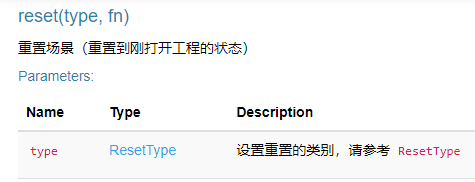
ResetType是一个可自由组合的枚举类型，定义如下：
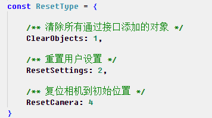
reset方法如果不传参数，默认行为是清除添加的所有对象。 如果要清除对象并复位相机，则可以这样调用：
api.reset(ResetType.ClearObjects | ResetType.ResetCamera); 或者 api.reset(1 | 4); 或者 api.reset(5);这样用户就不用自己通过调用一大堆对象的clear方法去一个一个清除所添加的对象了。
-
Heatmap新增波峰样式 HeatMapStyle
2023.05.09 Player用户自定义信息
-
AirCityPlayer增加初始化属性：customString
customString可用于存储用户自定义信息，稍候能够在实例管理接口的GetStatus后返回。如下的代码设置customString后

可以在CloudMaster的连接信息里看到此内容：

也可以在实时运行状态里看到：

2023.04.21 Marker3D对象增加按组操作方法、水流场对象增加属性
-
Marker3D对象新增方法如下：
- Marker3D对象增加showByGroupId()方法
- Marker3D对象增加hideByGroupId()方法
- Marker3D对象增加deleteByGroupId()方法
-
WaterFlowField水流场对象增加属性如下：
-
traceFactor (number) 光流轨迹保持因子，仅在displayMode=2生效，取值范围：[0~100] 值越大粒子轨迹越长，注意：水流场的采样点越稀疏，因子值就要设置越大
-
2023.04.18 相机对象增加环绕方法、载具对象增加偏移属性
相机对象增加环绕方法
- flyAround(location, rotation, distance, time) 相机环绕指定位置旋转一周
载具对象增加偏移属性
- localOffset 可选，载具基于原始位置坐标的偏移量，默认值：[0,0,0]
2023.04.13 新增编辑助手右键结束交互事件
EditHelper右键结束绘制后，返回EditHelperFinished事件
- 事件名称EditHelperFinished ，监听此事件可以获取绘制的坐标点数组coordinates
OnEvent: EditHelperFinished
{
"eventtype": "EditHelperFinished",
"coordinates": [[493117.875,2492701,0.6926171779632568],[492929.53125,2492265,2.290585994720459],[492777.71875,2492419.25,0.022695312276482582],[492818.1875,2492759.5,18.905742645263672],[493011.6875,2492885.5,17.678945541381836]]
}
2023.03.30 水流场新增透明度参数alphas
支持根据水深、UV值等设置流场对应区域的透明度：
- alphas (array) 流场内运动的采样点渲染区域不透明度数组，一维数组，数组元素：数值，范围：[0~1]，其中alphas数组必须和points和uvs保持对应关系且长度一致
2023.03.29 新增设置大地图下的贴合模式
支持三种贴合模式：
- decalMode: 大地图贴地模式下的贴合模式，0：都不接受 1：贴合所有 2：仅贴合地形；注意：此参数仅在renderMode设置为3时生效
2023.03.17 Vehicle载具对象新增涂装颜色colorType属性
载具对象新增颜色属性：
- colorType (number) 可选，载具涂装颜色，取值范围：[0~任意正整数]，默认值：0 随机使用涂装颜色，大于0则使用其他涂装颜色
2023.03.10 Coord对象新增支持火星坐标和百度坐标转换
Coord对象新增坐标转换类型参数：
- gcs2pcs(coordinates, coordinateType)
- pcs2gcs(coordinates, coordinateType)
2023.02.28 CustomObject对象增加闪烁和停止闪烁方法
对象新增控制闪烁相关方法：
- 开始闪烁：customObject.glow(data);
- 停止闪烁：customObject.stopGlow(ids);
2023.02.23 Misc对象增加蓝图函数和材质信息查询方法
新增查询蓝图函数信息方法：
- misc.getBPFunction(path)
新增查询材质包含的参数信息方法：
- misc.getMaterial(path)
2023.02.22 载具对象Vehicle增加属性
载具对象Vehicle增加属性：
- @param {boolean} autoHeight 是否自动计算载具行驶高度，默认值：true，注意：当设置为false时会使用载具坐标的高度Z
2023.02.17 CustomObject视角跟随、设置点云、太阳和月亮尺寸
自定义对象新增actionMode枚举参数：
- @param {ActionMode} actionMode 可选参数，相机视角跟随模式枚举，注意：如果指定了rotation参数同时又指定了跟随枚举，则枚举值包含的相机欧拉角会覆盖rotation参数
TileLayer图层对象增加设置点云大小方法：
- tileLayer.setPointCloudSize(size)
Weather对象增加设置太阳、月亮尺寸方法：
- weather.setSunSize(sunSize)
- weather.setMoonSize(moonSize)
2023.02.15 HeatMap热力图增加新的样式参数
热力图对象增加新的样式参数：
- @param {number} style 可选，热力图样式
- @param {number} textureSize style=0时参数生效，纹理大小，默认值：1024，取值范围：[128~4096]，注意：值越大纹理越清晰但创建越耗时
- @param {number} opacityMode style=0时参数生效，不透明度模式，默认值：1，取值范围：0：使用自定义色卡颜色的不透明度 1：使用热力点的不透明度
- @param {array} opacityRange style=0时参数生效，不透明度范围，默认值：[0~1.0]，注意：仅opacityMode为1时有效
- @param {number} blur style=0时参数生效，热力点模糊因子，默认值：0.85，注意：模糊系数越高，渐变越平滑，取值范围：[0~1.0]
- @param {object} colors style=0时参数生效，自定义颜色卡区间数组，包含渐变控制参数、无效点颜色和颜色数组
2023.02.10 TileLayer对象新增图层碰撞信息查询方法
TileLayer对象新增图层碰撞信息查询方法：
- getCollision(tileLayerIds)：查询图层包含的碰撞检测信息
2023.02.08 CustomObject对象新增方法
CustomObject对象新增方法如下：
- moveTo(data)：设置CustomObject对象根据实时GPS坐标运动
2023.02.06 Marker对象新增支持贴合载具Vehicle运动
Marker对象贴合Vehicle方法如下：
- setAttachCustomObject(data)：设置标注Marker贴合载具对象Vehicle运动
2023.02.01 Heatmap3d对象新增属性
-
Heatmap对象新增属性denoise：
- denoise (number) 降噪级别，取值范围：[0,1,2,3,4,5]，默认值：0 不做降噪；1~5 五级，值越大降噪越耗时
2023.01.30 属性改名
-
DigitalTwinPlayer的初始化属性由于功能扩展而改名
debugTouchPanel改名为debugEventsPanel，将此属性设置为true后，将在左上角显示一个半透明的调试面板，之前只能显示触摸事件，现在可以显示键盘、鼠标、触摸事件了，方便调试。
2023.01.17 新增火星坐标系和百度坐标系支持
-
新增火星坐标系和百度坐标系支持
- coordinateType (number) 坐标系类型，取值范围：0为Projection类型，1为WGS84类型，2为火星坐标系(GCJ02)，3为百度坐标系(BD09)，默认值：0
2023.01.13 CustomObject对象startMove方法新增参数
-
startMove方法新增rotation参数
- rotation (array) 可选参数，每个时刻模型的运动姿态（欧拉角），不传则系统自动计算。格式：[Pitch,Yaw,Roll]，数组元素类型：(number)，取值范围：[任意数值]
2023.01.11 Heatmap3d、Weather对象修改
-
Heatmap对象新增属性：
- heatValueMode (number) 热力值模式，取值：[0,1,2,3,4,5,6] ，0 : Interp插值（默认值） 1 : Nearest最近 2 : Addition叠加 3 : Minimum最小 4 : Maximum最大 5 : Overwrite覆盖 6 : DoOnce独占
- heatValueRange (array) 热力值的范围：[min,max]，数组元素类型：[任意浮点数]
- voxelShape (number) 体积点形状，取值：[0,1]，0 : Sphere球（默认值） 1 : Box盒子
- voxelAlphaMode (number) 三位像素块透明模式，取值：[0,1]，0 : 使用颜色渐变（默认值） 1 : 使用点
- textureSize (number) 纹理尺寸，取值范围：[128~512]，默认：128
- colors (array) 颜色卡区间数组，包含渐变控制和颜色数组
- voxels (array) 体素坐标数组，包含热力点坐标、热力值影响半径、热力值和不透明度四个属性结构示例：[{"coordinate": [0,0,0],"radius": 5,"heatValue": 0.5,"alpha": 1}]
-
Heatmap对象新增增加三维像素块方法：
- addVoxels() ,即支持动态往HeatMap3D对象内添加三维像素块
-
Weather对象新增设置阴影强度方法
- setShadowIntensity() , 设置阴影强度，值越大表示阴影越强
2022.12.30 Misc对象新增getConvexPolygon()方法
-
新增getConvexPolygon()方法：
- getConvexPolygon(array) 从一组离散点中获取凸多边形的顶点索引
2022.12.26 Vehicle 对象增加moveTo()方法
-
新增moveTo()方法：
- moveTo(data) 设置Vehicle对象运动的路径点（根据实时GPS数据运动）
2022.12.22 HeatMap3D 对象add方法增加属性
-
新增add方法属性：
- clipBox (array) 三维热力图盒子剖切的bbox范围，格式示例：[minX,minY,minZ,maxX,maxY,maxZ]
2022.12.16 ImageryLayer 对象add方法增加属性
-
新增ImageryLayer对象add方法属性：
- xmlPath (string) 可选，xml协议的url路径，不传则默认从init()方法获取
- layerName (string) 可选，图层名称，不传则默认从init()方法获取
- tileMatrixName (string) 可选，如果服务类型是WMTS：tileMatrixName是切片方案，如果服务类型是WMS：tileMatrixName是坐标类型，不传则默认从init()方法获取
- ogcEPSG (string) 可选，坐标系类型，不传则默认从init()方法获取
2022.12.16 CustomMesh对象新增属性
-
CustomMesh对象新增属性如下：
- colors (array) 顶点颜色数组
- createCollision (boolean) 是否创建碰撞体
2022.12.06 Polygon和Polyline对象新增自定义材质替换相关属性
-
Polygon和Polyline对象各自新增属性如下：
-
material 自定义材质路径
-
scalarParameters 材质数值参数，用来控制材质不透明度、亮度、UV等
-
vectorParameters 材质数组参数，用来控制材质颜色rgba等
2022.12.01 自定义对象CustomObject新增属性
注意：此localRotation属性替代了之前老版本的rotation属性，原来的rotation属性修正为控制世界坐标系的旋转
-
CustomObject对象新增控制自身旋转属性：
- localRotation (array) 模型自身旋转：[Pitch,Yaw,Roll]，数组元素类型：(number)，取值范围：[任意数值]
2022.11.30 新增载具对象Vehicle及相关操作方法
-
Vehicle对象新增如下方法：
- add() 添加载具对象
- update() 更新载具对象
- clear() 清空载具对象
- show() 显示载具对象
- hide() 隐藏载具对象
- delete() 删除载具对象
- get() 查询载具对象
- setWayPoints() 给载具对象添加运动的路径点
- start() 启动载具运动
- pause() 暂停载具运动
- resume() 恢复载具运动
- stop() 停止载具运动
2022.11.26 CustomObject对象setLocation()新增参数
-
setLocation()方法新增参数如下：
- smoothTime {number} 可选，平滑移动的插值时间，仅在smoothMotion=1即平滑移动下生效，注意：传值若为0则根据调用setLocation()接口的时间自动计算平滑移动的插值时间，默认值：1，单位：秒
- smoothTime {number} 可选，平滑移动的插值时间，仅在smoothMotion=1即平滑移动下生效，注意：传值若为0则根据调用setLocation()接口的时间自动计算平滑移动的插值时间，默认值：1，单位：秒
2022.11.16 新增保存场景方法
-
新增saveProject方法
- saveProject() 保存场景（只保存场景设置，不保存接口创建的对象）
- saveProject() 保存场景（只保存场景设置，不保存接口创建的对象）
2022.11.10 Polygon3D对象新增方法
-
新增如下方法
- showAll() 显示所有Polygon3D对象
- hideAll() 隐藏所有Polygon3D对象
2022.11.09 SettingPanel对象设置后期方法新增属性
-
setPostProcessMode() 方法参数新增属性如下：
- darkCorner {number} 暗角，取值范围：[0~1]，单位：百分比，默认值：0
- lutMode {number} LUT调色模式，取值范围：[0~30]，默认值：0（关闭调色模式），1-30对应不同LUT调色效果
- lutIntensity {number} LUT调色强度，类型为百分比，取值范围：[0~1.0]，默认值：0，即小数对应的百分比
2022.11.08 Tools、Misc对象新增方法
-
Tools新增显示隐藏系统面板方法如下：
- 显示系统面板方法 showPanel(type,positon)
- 隐藏系统面板方法 hidePanel()
-
Misc对象新增方法如下：
- setMultiviewportInteractSync(bool) 多视口模式下设置相机是否同步
- setMultiviewportInteractSync(bool) 多视口模式下设置相机是否同步
2022.11.02 新增设置指北针位置方法
-
Settings对象新增方法如下：
- setCampassPosition(left,top) 设置指北针位置
- setCampassPosition(left,top) 设置指北针位置
2022.10.29 贴花对象新增参数
-
新增贴花类型参数
- decalBlendMode (number) 贴花类型，取值范围：[0,1]；取值说明：0背景混合，1仅贴花；默认值：0
- decalBlendMode (number) 贴花类型，取值范围：[0,1]；取值说明：0背景混合，1仅贴花；默认值：0
2022.10.28 Tools设置测量增加字体大小控制参数
-
设置测量模式增加字体大小参数
- 测量模式显示字体大小：textSize 默认值10
- 测量模式显示字体大小：textSize 默认值10
2022.10.20 完善VideoProjection和Settings对象
-
VideoProjection对象新增方法如下：
- clear()方法
-
Settings对象新增方法如下：
- 查询当前交互模式 getInteractiveMode()方法
- 查询当前交互模式 getInteractiveMode()方法
2022.10.12 完善ImageryLayer、ShapeFileLayer
-
新增ImageryLayer对象方法如下：
- ImageryLayer对象增加show()方法
- ImageryLayer对象增加hide()方法
- ImageryLayer对象增加delete()方法
-
ShapeFileLayer对象新增属性cacheAllField：
- cacheAllField (boolean) 当type==Polygon时此属性可选，Polygon支持缓存所有字段，以便于高效动态更新Polygon不同字段的效果，默认值：false
- cacheAllField (boolean) 当type==Polygon时此属性可选，Polygon支持缓存所有字段，以便于高效动态更新Polygon不同字段的效果，默认值：false
2022.10.09 扩展初始化属性
-
DigitalTwinPlayer初始化参数options增加属性
-
mainUI：是否显示Cloud工具栏，如果设置为true就显示，如果设置为false就隐藏，如果没有设置，就保持原状。
-
campass: 是否显示指北针，如果设置为true就显示，如果设置为false就隐藏，如果没有设置，就保持原状。
-
2022.09.28 新增设置WMTS图层服务的透明度方法
-
Settings对象新增如下方法：
- setWMTSLayerOpacity(data) 设置图层透明度
- setWMTSLayerOpacity(data) 设置图层透明度
2022.09.27 相机限制、后期泛光参数、移除VTPK
-
Camera新增如下方法：
- lockByBBox(bbox) 根据bbox范围锁定相机交互范围
- unLockByBBox() 解锁相机交互
-
设置面板后期设置setPostProcessMode()新增如下参数：
- bloomIntensity: 0.1,//泛光，取值范围：[0~10.0]，默认值：0
-
Settings对象新增如下方法：
- removeLabelLayer() 移除当前显示的VTPK的标注
- removeLabelLayer() 移除当前显示的VTPK的标注
2022.09.16 实例管理功能支持REST
-
实例管理服务接口调用支持REST方式
实例管理服务有2种调用方式：WebSocket和REST，两种方式发送和接收的数据格式都是JSON
-
WebSocket方式，需要先建立连接，然后才能调用
-
REST通过HTTP POST，注意：POST时Content-Type需要设置为application/json，要发送的JSON字符串设置在Body里
-
获取实时运行状态的接口不支持REST，只能通过WebSocket方式调用
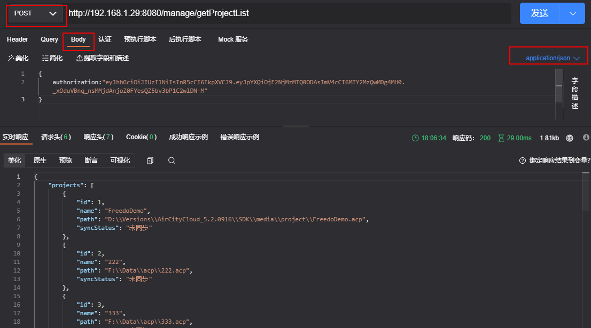
-
2022.09.15 SettingsPanel对象新增设置相机最大高度参数
-
相机设置支持最大相机高度maxCameraHeight
- 设置相机面板参数 setCameraMode(nearClipPlane, fovH, minCameraHeight, maxCameraHeight)
- 设置相机面板参数 setCameraMode(nearClipPlane, fovH, minCameraHeight, maxCameraHeight)
2022.09.09 增加ImageryLayer 网络图层对象及相关操作方法
-
新增ImageryLayer对象，相关操作方法如下：
- ImageryLayer对象增加init()方法
- ImageryLayer对象增加add()方法
2022.09.01 优化ShapeFile对象命名修改为ShapeFileLayer
-
矢量图层对象名称修改为ShapeFileLayer
- 兼容之前5.2/5.1的别名写法，例如shapeFile和shp
- 兼容之前5.2/5.1的别名写法，例如shapeFile和shp
2022.08.31 Marker对象新增按分组操作方法
-
动态标注对象新增如下方法：
- showByGroupId() 按分组ID显示
- hideByGroupId() 按分组ID隐藏
- deleteByGroupId() 按分组ID删除
2022.08.25 优化focus()方法
-
新增rotation参数控制相机定位时旋转
- rotation (array) 可选参数，相机旋转的欧拉角：[Pitch,Yaw,Roll]，数组元素类型：(number)，取值范围：Pitch[-90~90] Yaw[-180~180] Roll[0]
- rotation (array) 可选参数，相机旋转的欧拉角：[Pitch,Yaw,Roll]，数组元素类型：(number)，取值范围：Pitch[-90~90] Yaw[-180~180] Roll[0]
2022.08.23 完善Marker对象
-
Marker对象新增智能模式下属性
- autoDisplayModeSwitchFirstRatio (number) 智能模式时的显示模式切换时range参数的首段比例，仅在displayMode=4时生效，取值范围：[0.01~1.0)，默认值0.01，示例：如果range=[1,1000]，则在[1,10]范围内dislayMode=2
- autoDisplayModeSwitchSecondRatio (number) 智能模式时的显示模式切换时range参数的第二段比例，仅在displayMode=4时生效，取值范围：[0.01~1.0)，默认值0.1，示例：如果range=[1,1000]，则在[10,100]范围内dislayMode=1，大于100则dislayMode=1
2022.08.22 完善Settings、InfoTree
-
Settings对象新增方法setCursorAutoSync()
- 设置多客户端访问时鼠标同步
-
InfoTree对象新增focus()方法
- 图层树对象新增focus()方法
- 图层树对象新增focus()方法
2022.08.19 完善Marker对象
-
displayMode参数新增显示模式
- displayMode:3，移动时不显示，不参与避让聚
- displayMode:4，智能模式，根据当前相机高度自动适配以上模式，类似金字塔lod加载效果，内置规则:range范围的1%内取值2，1%至10%取值1，大于10%取值0
2022.08.17 完善Setting对象
-
设置VTPK标注方法
- setLabelLayer(name)
-
获取所有VTPK方法
- getLabelLayer()
-
相机移动事件的开关方法增加事件返回间隔时间参数
settings对象setEnableCameraMovingEvent方法增加period参数，值越小返回的越快，单位：毫秒，默认：20ms，取值范围：[0~100]
2022.07.21 优化DigitalTwinPlayer
-
显示任务队列
由于现在的接口都是在主线程执行的，当接口调用比较耗时的时候，视频流会处于假死状态（无法交互），为了让用户知道当前的状态，增加了API调用信息的显示。
DigitalTwinPlayer类的构造函数增加属性：showTaskList，取值如下：
-
0: 永不显示
-
1: 执行比较耗时的操作时显示（默认值）
-
2: 一直显示
如果值为1，当一条API指令执行时间超过1秒，就会显示任务队列信息。
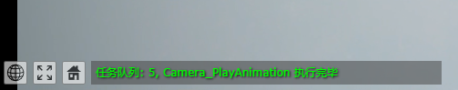
-
-
增加错误代码
如果当前实例正在执行比较耗时的API指令，用户在连接的时候，就会出现黑屏现象，为了明确提示用户，增加了错误代码：4107
2022.07.21 完善DigitalTwinPlayer
-
二次开发可以获取视频流实时状态
DigitalTwinPlayer类的构造函数增加属性：onvideostatus，用于接收视频流的状态信息，例如：帧率、码率等
var options = { 'onvideostatus': stats => { //用于接收视频流的状态信息，例如：帧率、码率、QP等 document.title = `Cloud--FPS:${stats.framesPerSecond}`; }, //其他属性... } var aircityPlayer = new DigitalTwinPlayer(playerHost, options); -
actionEventHander属性改名为onaction
DigitalTwinPlayer构造函数的初始化属性actionEventHander改名为onaction，为了兼容之前代码，之前的actionEventHander仍然可用。
-
二次开发可以随时开关键盘、鼠标交互事件
DigitalTwinPlayer类增加方法：setActionEventEnabled，可以随时设置是否开启键盘、鼠标交互事件的回调功能
2022.07.18 视频投影对象新增支持投影线框
-
投影线框参数：
- frustumVisible (boolean) 是否显示投影线框，默认值：false
- frustumVisible (boolean) 是否显示投影线框，默认值：false
2022.07.07 光源Light对象新增支持automate属性
-
Light对象新增属性描述如下：
- automate (boolean) 可选参数，是否根据系统时间自动开关，即开启后晚上自动亮白天自动灭，默认值：true
- automate (boolean) 可选参数，是否根据系统时间自动开关，即开启后晚上自动亮白天自动灭，默认值：true
2022.06.21 完善customObject、marker对象
-
customObject的objectId参数描述如下：
- objectId (string | array) TileLayer图层中包含的待复制的模型(Actor)的ObjectId，同时也支持数组类型参数即把多个actor复制为一个customObject
-
marker的imagePath和hoverImagePath参数描述如下：
-
imagePath (string) 图片路径，支持gif动图，支持本地路径和网络路径
-
hoverImagePath (string) 鼠标悬停时显示的图片路径，支持gif动图，支持本地路径和网络路径
-
2022.06.20 全景图对象新增方法，Marker、ShapeFile对象新增属性
-
Panorama对象新增操作方法如下：
- 进入全景图模式：enter(id)
- 退出全景图模式：exit()
- 切换显示模式：switchMode()
-
Marker对象新增属性如下：
- clusterByImage (boolean) 聚合时是否根据图片路径分类聚合显示，即当多个marker的imagePath路径参数相同时按路径对marker分类聚合
-
ShapeFile对象新增属性如下：
- clusterByImage (boolean) 当type==Point时此属性可选，是否按相同图片路径(pointImage)聚合显示
2022.06.14 视频流展示新增多视口模式（分屏显示）
-
Misc对象新增的操作多视口方法如下：
- 进入多视口：enterMultiViewportMode(viewportMode,lineColor,lineSize)
- 退出多视口：exitMultiViewportMode()
- 设置当前激活视口：setActiveViewport(index)
- 获取当前激活视口：getActiveViewport()
2022.06.02 蓝图函数支持传递多个参数
-
Misc对象下callBPFunction()和CustomObject对象下callFunction()/callFunction4CustomObjectArr()新增parameters属性
-
parameters 传入多个参数，数组类型，结构示例：[{"paramType":BPFuncParamType.String,"paramValue":"示例值"},{"paramType":BPFuncParamType.Bool,"paramValue":false},{"paramType":BPFuncParamType.Float,"paramValue":100.8}]
2022.05.27 贴花对象Decal新增bbox参数
-
贴花对象Decal新增bbox参数
-
bbox 可选参数，贴花覆盖的包围盒范围，数组格式：[minX,minY,minZ,maxX,maxY,maxZ]，数组元素：[任意浮点数]，注意：设置bbox参数后location、scale参数会失效
2022.05.19 Polygon3D对象新增自定义材质替换属性
-
Polygon3D对象新增自定义材质替换属性
-
material 自定义材质路径
-
scalarParameters 材质数值参数，用来控制材质不透明度亮度等
-
vectorParameters 材质数组参数，用来控制材质颜色rgba等
-
generateTop 是否显示顶面
-
generateSide 是否显示侧面
-
generateBottom 是否显示底面
2022.05.19 修改Tools对象体剖切方法和日日照分析方法
-
Tools对象体剖切方法更新
- tools.startVolumeClip(...)方法新增rocation参数
- 新增更新体剖切方法:tools.updateVolumeClip(...)
-
日照分析startSunshineAnalysis(options)方法设置对象options新增时间区间属性
- startTime 开始时间，取值类型：时间字符串，默认值：08:00
- endTime 结束时间，取值类型：时间字符串，默认值：16:00
2022.05.16 优化Cloud UI及交互
-
完善DigitalTwinCloud视频流窗口的UI
视频流窗口的左下角增加3个按钮：显示信息、全屏显示、初始位置
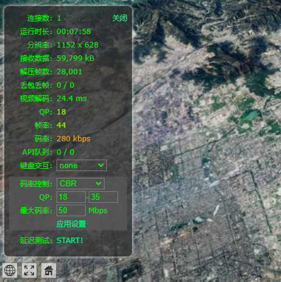
-
显示信息按钮
鼠标移上去显示当前实例的详细信息，点击显示或隐藏实时运行状态窗口
-
全屏显示
点击可全屏显示视频流或者退出全屏显示
-
初始位置
鼠标左键点击：回到SavedCamera或者工程初始位置
鼠标右键点击：保存当前的相机位置到SavedCamera
鼠标中间点击：重置SavedCamera为工程初始位置并跳转
-
DigitalTwinCloud键盘交互默认方式改为video
之前版本的键盘交互默认是关闭的，现在改为video。
2022.05.11 键盘鼠标交互事件
-
DigitalTwinPlayer增加了键盘、鼠标交互事件的回调函数
DigitalTwinPlayer的初始化参数params增加属性：actionEventHander，可以用来设置键盘、鼠标交互事件的回调函数，目前支持以下事件的回调：
- onmouseenter
- onmouseleave
- onmousemove
- onmousedown
- onmouseup
- onkeydown
- onkeyup
let actionEventHander = { 'onmousedown': e => { log(`[MouseDn] button: ${e.button}, pos: ${e.x}, ${e.y}`) }, 'onmouseup': e => { log(`[MouseUp] button: ${e.button}, pos: ${e.x}, ${e.y}`) }, 'onkeydown': e => { log(`KeyDown: ${e.code}`) } } aircityPlayer = new DigitalTwinPlayer("192.168.1.29:8080", { 'actionEventHander': actionEventHander //鼠标、键盘交互事件的回调 //其他属性 //... });运行效果：
[MouseDn] button: 2, pos: 892, 625 [MouseUp] button: 2, pos: 892, 625 KeyDown: KeyF KeyDown: KeyA KeyDown: KeyD KeyDown: ControlLeft KeyDown: ShiftLeft -
CustomMesh对象新增自定义材质替换属性
-
material 自定义材质路径
-
scalarParameters 材质数值参数，用来控制材质不透明度
-
vectorParameters 材质数组参数，用来控制材质颜色
-
-
蓝图函数参数类型枚举(BPFuncParamType)新增浮点数组
- FloatArray新增浮点数值参数类型FloatArray
2022.05.10 DigitalTwinPlayer
-
DigitalTwinPlayer类增加初始化参数
DigitalTwinPlayer初始化参数params增加属性：useHttps，可以明确指定是否使用HTTPS进行WebSocket连接。
如果使用Nginx通过Https反向代理DigitalTwinCloud的Http服务，为了能够正确的建立连接，需要在初始化DigitalTwinPlayer的时候设置useHttps属性为true。
2022.05.09 导出天际线
-
优化导出天际线的接口
原先的接口定义如下：tools.exportSkyline(filePath, imageSize);
第一个参数只能是云渲染服务器的路径，这在Cloud环境下调用会有诸多不便，为了解决这个问题，增强了第一个参数的含义，如果传递的是文件路径，则导出图片到磁盘指定的位置， 如果传递字符串"base64"（不区分大小写），则接口返回图片的BASE64编码字符串。
如下代码的运行效果：
fdapi.tools.exportSkyline('base64', [400, 200],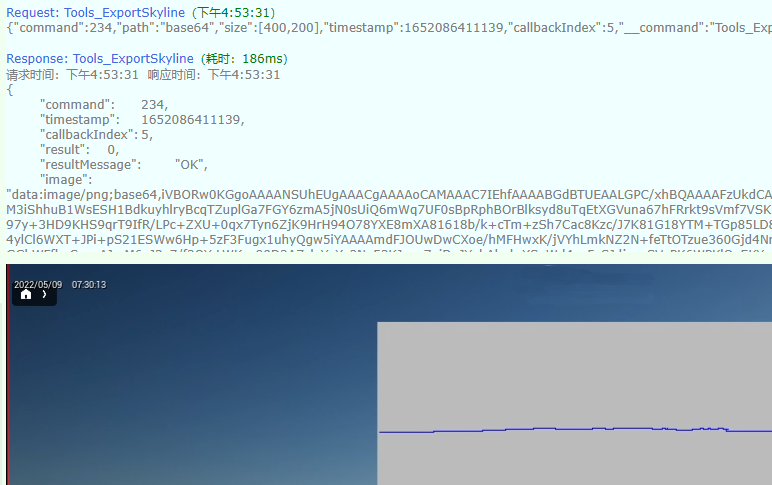
2022.04.18 实现全屏功能
-
视频流窗口实现全屏功能
DigitalTwinPlayer对象增加属性：fullscreen{get, set}，可以用来设置是否全屏，也可以获取当前是否处于全屏状态
例如：
fdplayer.fullscreen = trueDigitalTwinPlayer对象初始化参数options增加属性showFullscreenButton，用于控制是否在右下角显示“全屏”按钮，默认为false，不显示。
2022.04.15 内嵌浏览器内核支持回调了
-
Marker的弹窗页面和tick页面里调用API支持回调了
现在在弹窗页面和tick页面里调用API方法，完全跟正常页面调用一样了，支持回调函数了。
例如：
async function getCamera() { let o = await fdapi.camera.get(); document.getElementById('info').innerText = JSON.stringify(o); }运行效果：
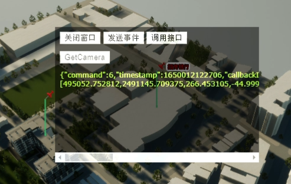
2022.04.13 增加获取SDK完整版本号的方法
-
DigitalTwinAPI类增加方法getVersion
可获取SDK的完整版本号，例如：5.3.0413
注：通过AcApiVersion或者acapi.VERSION获取到的是SDK的大版本号，例如：5.3，而通过此方法获取到的是完整版本号
2022.04.07 Polyline和Polygon对象增加可视范围参数
-
Polyline、Polygon新增可视范围参数
- range (array) 可视范围: [近裁距离, 远裁距离]，取值范围: [任意负值, 任意正值]
2022.04.01 天气对象设置雾效新增雾化范围参数
-
setFogParam() 新增雾化范围参数fogRange
- setFogParam(fogDensity, fogGroundDensity, fogGroundHeight, fogRange)
2022.03.25 Marker3D、Weather、TileLayer、Tools、Camera对象修改
-
Marker3D新增可视范围和自动高度属性
- range：3D标注的可视距离范围：[min,max]，单位：米
- autoHeight：自动判断下方是否有物体，设置正确高度，默认值：false
-
Weather对象新增设置云层高度方法
- 设置云层高度：setCloudHeight(cloudHeight) 参数单位：公里
-
TileLayer对象Foucs方法新增定位距离和飞机时间参数
- distance：定位距离 单位：米
- flyTime : 飞行时间 单位：秒
-
Tools对象视域分析接口新增起始坐标位置属性
- startPoint：起点坐标位置
- endPoint : 终点坐标位置
-
Camera对象新增方法计算空间两点的欧拉角
- getEulerAngle(startPoint,endPoint)：起始点坐标位置
2022.03.25 支持Node服务器环境调用
-
DigitalTwinCloud JS API支持Node服务器环境调用了
使用方法与浏览器环境一样
const acapi = require('./ac.min'); var fdapi = new acapi.DigitalTwinAPI('192.168.1.29:4321', { onReady: () => { let data = { id: 't1', coordinate: [491274.65625, 2489124, 21.0], text: '北京银行', range: [1, 10000] } fdapi.tag.delete('t1'); fdapi.camera.set(492472.750000, 2487660.750000, 1637.308838, -49.619568, -93.635345, 0); fdapi.tag.add(data); } }); -
WebSocket方式的API调用不再限制数据大小
之前通过WebSocket方式调用API会有数据大小限制（超过30MB就会造成WebSocket连接断开），新的版本不再有这个限制了，对浏览器环境和Node服务器环境都没有限制了。
注意：
只有通过CloudAPI调用接口发送数据才不会有限制， 如果自己创建WebSocket对象，自己发送数据还是有限制。
2022.03.24 实现在三维渲染每帧的时候执行JS脚本
用户经常需要使用定时器（setInterval）或者循环来执行一些非常频繁的接口调用，以实现一些自定义的动画效果，但是这些接口调用是通过JS API实现的， 因为Javascript是单线程执行的，太频繁的调用会影响浏览器的响应，另外Cloud的鼠标、键盘交互事件也是通过JS发送到后台的，频繁的接口调用会影响交互事件的传输，造成交互卡顿。 而且如果传输的数据量比较大时，也会占用不少带宽。
为了解决这个问题，实现更高效的API调用，今天的版本实现了在C++每帧渲染的时候执行JS脚本以实现用户自定义的动画效果，这种实现比前端API调用有以下优点：
- 高效，直接本机通过C++调用JS
- 不影响鼠标、键盘交互，以及其他接口的调用
- 不占用网络带宽
DigitalTwinAPI增加2个方法：registerTick和removeTick
registerTick用于注册每帧执行的脚本，示例：
fdapi.registerTick("D:/RelCloud-5.1/SDK/samples/popup/tick.html")
参数是html页面的地址，内容如下：
<!doctype html>
<html>
<head>
<meta charset="utf-8">
<title>TICK回调代码</title>
<script type="text/javascript" src="../../ac_conf.js"></script>
<script type="text/javascript" src="../../ac.min.js"></script>
</head>
<body>
</body>
</html>
<script>
var fdapi;
let tagdata = {id: 't1',coordinate: [491274.65625, 2489124, 21.0],text: '北京银行'};
window.onload = function () {
fdapi = new DigitalTwinAPI();
fdapi.tag.delete('t1');
fdapi.camera.set(492472.750000, 2487660.750000, 1637.308838, -49.619568, -93.635345, 0);
fdapi.tag.add(tagdata);
}
function ontick() {
tagdata.coordinate[0] += 10;
fdapi.tag.setCoordinate('t1', tagdata.coordinate);
}
</script>
说明：
1）此页面是在服务器上执行的
2）此页面可以使用所有的Cloud API，约束条件跟在POI弹窗里调接口是一样的，不支持回调。
3）ontick方法名是固定的，在C++渲染的每帧会调用此JS方法
4）registerTick可以多次调用，后面的调用会冲掉前面的调用
removeTick用于移除设置的每帧回调。
2022.03.23 ShapeFile对象新增Feature要素操作方法
-
ShapeFile对象新增方法如下：
- 高亮单个要素区域：highlightFeature(shapeFileId,featureId)
- 取消高亮单个要素区域：stopHighlightFeature(shapeFileId,featureId)
- 高亮多个要素区域：highlightFeatures(data)
- 取消高亮多个要素区域：highlightFeatures(data)
- 定位要素区域：focusFeature(shapeFileId, featureId, distance, flyTime)
- 查询多个要素区域：getFeature(data)
2022.03.22 实现在POI弹窗里进行接口调用及交互操作
因为这些对象的弹出窗口是在后台渲染的，之前是一个孤立的浏览器内核窗口，不能进行API调用，不能和主页面进行交互操作，用户要实现这些功能，需要进行非常复杂的代码实现，既不稳定也很难用， 为了解决这一问题，今天的版本实现了以下几个功能：
-
和主页面进行通信（单向）
在弹窗的页面中进行如下调用：``FDExternal.postevent('this is a message.')`
FDExternal是弹窗的浏览器内核的内置对象
主页面的事件处理：
//onEvent let _onEvent = (e) => { if (e.eventtype == 'MarkerCallBack') { alert(e.Data); } log('OnEvent: ' + e.eventtype); };
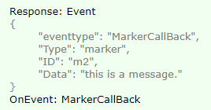
-
在弹窗里直接进行接口调用
var fdapi; window.onload = function () { fdapi = new DigitalTwinAPI(); //初始化时不需要传递任何参数 } function callApi() { fdapi.settings.setMainUIVisibility(false); fdapi.odline.clear(); let o = { id: 'od1',color: Color.Green, coordinates: [[492303.65625, 2487534.5, 4.195], [491391.5625, 2487777.5, 4.2]], flowRate: 1,intensity: 1,bendDegree: 0.5, tiling: 0.5,lineThickness: 15,flowPointSizeScale: 30, labelSizeScale: 1000,endLabelShape: 1， lineShape: 1,lineStyle: 0,flowShape: 1, startPointShape: 1,endPointShape: 1,startLabelShape: 1 }; fdapi.odline.add(o); fdapi.odline.focus(o.id); }这种方式效率很高，不会通过网络传输，也不会占用主页面的脚本执行时间，直接通过JS调用C++的底层功能。 但是也是有缺点的：
-
调试不方便，因为代码是在POI弹窗里运行，所以没有办法像浏览器一样进行调试，如果直接在浏览器运行弹窗页面也是不能进行API调用的（因为浏览器里没有FDExternal对象）
-
没有接口调用的返回值，不能使用回调函数或者异步操作(await/async, then等)
如果不能接受上面2个缺点，可以通过第1条更新进行迂回实现，通过向主页面发送消息，所有逻辑代码在主页面里实现。
-
-
在弹窗里直接调用C++方法关闭窗口
function closeWindow() {
FDExternal.close();
}
通过这个方法可以在弹窗页面里实现自定义的关闭按钮
2022.03.17 新增三维热力图对象，Settings新增交互模式、Marker新增方法
-
HeatMap3D对象新增方法如下：
- 添加对象：add()
- 修改对象：update()
- 删除对象：delete()
- 查询对象：get()
- 聚焦对象：focus()
- 隐藏对象：hide()
- 显示对象：show()
- 清空对象: clear()
-
Settings对象修改方法如下：
- setInteractiveMode(mode)：设置交互模式，0：自由交互模式，1：第三人称模式，2：无人机模式，3：中心漫游模式（物体观察模式），4：地图模式
-
Marker对象新增方法如下：
- setAttachCustomObject(data)：设置标注Marker贴合模型对象CustomObject，模拟标注跟随物体运动
2022.03.11 Settings对象setMapMode()方法增加设置WMTS最大层级参数
-
Settings对象setMapMode()方法新增设置WMTS最大层级参数如下：
- maxLevel : WMTS服务最大显示层级，取值范围：[0~22]，默认值：10
2022.03.10 图层TileLayer对象新增getAllFlattenInfo方法、get()方法增加包围盒bbox信息
-
TileLayer对象新增方法和属性如下：
- BBox：[minX,minY,minZ,MaxX,maxY,maxZ]
- 新增方法：getAllFlattenInfo() 查询所有图层的剖切信息
2022.03.08 优化光标资源
-
将光标文件内置
之前的SDK用户在进行二次开发时需要将SDK目录的cursors文件夹拷贝到自己的环境并与ac.min.js在一个文件夹下。今天之后的版本不再需要这个cursors文件夹了，光标资源已经内置到API里，不需要单独的cur文件了。
-
DigitalTwinPlayer初始化增加属性：useBuiltinCursors
参数类型：boolean，默认值true
设置是否使用内置光标，如果设置为false, 则不使用内置光标，视频窗口将一直显示箭头样式的光标
2022.03.04 水流场WaterFlowField对象属性调整
-
WaterFlowField对象调整属性如下：
- WaterFlowField对象新增属性：uvRangeMapping (array) 流速重映射范围，为了突出流动效果，可以对流速有效范围进行一个映射
- WaterFlowField对象修改属性：colorSpeedRange修改为validUVRange (array) 流速有效范围，流速小于min的区域会显示蓝色，min到max之间的区域会从蓝色过渡到红色显示热
2022.03.02 DigitalTwinPlayer对象增加初始化属性
-
DigitalTwinPlayer初始化参数options增加属性urlExtraInfo
在初始化DigitalTwinPlayer对象时，可以在options参数中设置属性：urlExtraInfo，用于在创建WebSocket连接的URL后面添加附加信息（例如授权认证信息等），例如如下的示例代码：
var player = new DigitalTwinPlayer('127.0.0.1:8080', { iid:'2471787814316', pid:1, urlExtraInfo:{ userToken:'jb3k5b345', appToken:'jbsfhjg4234' } })最终生成的WebSocket URL是这样的：
ws://192.168.1.29:8080/player?hasVideo=true&iid=2471787814316&pid=1&userToken=jb3k5b345&appToken=jbsfhjg4234
2022.03.01 视频投影对象自定义蒙版图片属性
-
VideoProjection对象新增自定义蒙版图片属性
texturePath (string) 自定义投影蒙版图片路径，可以是本地路径，也支持网络路径
2022.02.24 全景图对象增加属性、TileLayer对象setCollision()方法增加参数
-
全景图对象增加属性
是否贴地：onTerrain，布尔类型，默认true，设置为贴地后offset偏移量的Z轴会失效
偏移量：offset，数组类型，[X,Y,Z] -
TileLayer对象setCollision()方法增加参数
enableMouseInteract 是否开启鼠标交互，默认值：true 开启交互
enableMousePick 是否开启鼠标拾取查询，默认值：true 开启拾取
enableCharacterCollision 是否开启碰撞，默认值：true 开启碰撞
2022.01.25 Tools对象多边形剖切增加反转参数和3dt挖洞增加反转参数
-
多边形剖切增加反转参数：isReverseCut
多边形剖切反转：tools.startPolygonClip(coordinates,isReverseCut)
-
TileLayer多边形挖洞方法增加反转参数：isReverseCut
新增多边形挖洞反转：tileLayer.addHole()
修改多边形挖洞反转：tileLayer.updateHole()
2022.01.26 Tools对象新增等高线分析方法
-
Tools对象新增等高线分析方法
开始分析：startContourLineAnalysis(option)
结束分析：stopContourLineAnalysis()
2022.01.21 Tools对象新增坡度坡向分析方法，设置测量增加地表面积测量类型枚举
-
Tools对象新增坡度坡向分析方法
开始分析：startTerrainSlopeAnalysis(option)
结束分析：stopTerrainSlopeAnalysis() -
Tools对象设置测量模式增加地表面积测量类型枚举
地表面积测量：MeasurementMode.TerrainArea
2022.01.13 TileLayer对象设置样式setStyle()方法新增参数
-
TileLayer对象设置样式方法新增参数
饱和度：saturation
亮度：brightness
对比度：contrast
对比度基准：contrastBase
2022.01.13 Tools对象新增日照分析
-
Tools对象新增日照分析工具
开始日照分析方法：startSunshineAnalysis(options)
结束日照分析方法：stopSunshineAnalysis()
2022.01.06 Tools对象新增多条线段求交方法
-
Tools对象新增方法linesIntersect()
linesIntersect(startEndPointArr, highPrecision,returnDetails)：支持一次设置多条线段求交，支持设置返回信息精度和返回内容详情
2021.12.28 Marker对象新增属性 Weather对象新增方法
-
Marker对象新增属性
hoverImageSize：鼠标悬停时显示的图片尺寸，[width,height]，默认值：[0,0] 使用图片原始尺寸
-
Weather对象新增设置云层厚度方法
setCloudTickness(cloudTickness)：云层厚度，取值范围：[0~20]
: [28,28],//鼠标悬停时显示的图片尺寸
2021.12.27 TileLayer接口修复挖平操作方法
-
TileLayer修复挖平方法addModifier()的bug
2021.12.24 TileLayer接口修改
-
TileLayer add方法的data参数增加可见性和是否释放资源属性
visible：添加后是否可见
releaseWhenHidden：隐藏时是否释放资源
2021.12.23 Tools对象新增通视分析、开敞度分析和填挖方分析方法
-
新增通视分析和开敞度分析
- Tools对象增加通视分析方法：startVisiblityAnalysis()、stopVisiblityAnalysis()
- Tools对象增加开敞度分析方法：startViewDomeAnalysis()、stopViewDomeAnalysis()
- Tools对象增加填挖方分析方法：startCutFillAnalysis()、stopCutFillAnalysis()
2021.12.22 TileLayer对象新增方法和get()新增返回属性
-
新增设置TileLayer图层的可视高度范围方法，get()方法返回增加属性
- TileLayer对象增加setViewHeightRange(id, minVisibleHeight, maxVisibleHeight)
- TileLayer对象get()方法返回结果增加minVisibleHeight、maxVisibleHeight属性，可视高度范围的最小最大值
2021.12.13 设置面板SettingsPanel--后期选项增加设置倾斜摄影透明度参数
-
后期设置方法setPostProcessMode()新增设置属性如下：
- osgbGlobalAlpha: 0.8 //倾斜摄影不透明度，取值范围：[0,1.0]，默认值：1.0
2021.12.10 新增流场WaterFlowField对象及相关操作方法
-
WaterFlowField对象新增方法如下：
- WaterFlowField对象增加add()方法
- WaterFlowField对象增加update()方法
- WaterFlowField对象增加delete()方法
- WaterFlowField对象增加get()方法
- WaterFlowField对象增加clear()方法
- WaterFlowField对象增加focus()方法
- WaterFlowField对象增加hide()方法
- WaterFlowField对象增加show()方法
-
修复TileLayer的hideActors()方法：
- 修复TileLayer的隐藏多个Actor方法 hideActors()
2021.12.08 三维图层TileLayer对象增加三个属性
-
TileLayer对象新增属性及默认取值如下：
- enableMouseInteract (boolean) 是否开启鼠标交互，默认值：true 开启交互
- enableMousePick (boolean) 是否开启鼠标拾取查询，默认值：true 开启拾取
- enableCharacterCollision (boolean) 是否开启碰撞，默认值：true 开启碰撞
2021.12.07 自定义对象CustomObject增加方法
-
CustomObject对象新增设置视口可见性方法如下：
- 新增方法： setViewportVisible(id,vp,fn) 仅在播放导览时生效
2021.12.03 优化API调用性能，Tools剖切方法增加参数，自定义对象增加控制移动方法
-
实现禁用回调功能以优化性能
之前调用每个API方法，服务器在处理后都会返回调用结果，但是有些接口用户根本不关心也不需要服务器返回结果，比如设置相机位置、显隐界面UI等。
因为服务器返回信息都是排队返回的，如果在大量调用接口的时候，每个接口都返回信息，就会造成队列拥挤，这样用户真正需要调用返回信息的接口的时候，就会等待很久。所以增加了禁用服务器返回的功能。
每个API方法的最后一个参数都是回调函数fn，如果想禁止服务器在处理后返回响应，只需要将fn 设置成null即可（注意不是undefined，必需是null）。
async function test_stress_disable_callback() { log('100次API调用开始...'); let t1 = new Date().getTime(); for (let i = 0; i < 100; i++) { fdapi.settings.setMainUIVisibility(false, null); //下面是启用回调的代码，可以对比一下 //await fdapi.settings.setMainUIVisibility(false); } let t2 = new Date().getTime(); log('100次API调用开始! 总共耗时：' + (t2 - t1)); }如上测试代码，如果禁用服务器响应总耗时是477ms，如果启用服务器响应，总耗时是10072ms。
注意：fn设置成null以后，此方法就不能再等待了，前面不能加await了。
-
Tools面、体剖切方法增加参数
- 新增参数：Tools面剖切方法新增参数控制交互编辑startPlaneClip(location, rotation, isShowPlane,isEditable, fn)
- 新增参数：Tools体剖切方法新增参数控制交互编辑 startVolumeClip(bbox, value, isShowBBox ,isEditable, fn)
-
CustomObject增加控制对象移动方法
- 新增方法：startMove() 按路径轨迹和差分时间执行物体移动
2021.12.02 Light对象新增可视距离distance属性
-
新增功能如下
- Light光源对象增加可视距离distance属性，默认5000米
2021.12.01 新增SettingsPanel对象新增Polyline样式
-
新增设置面板SettingsPanel对象及相关操作方法如下
- 设置汇报模式参数 setReportModeMode()
- 获取汇报模式参数 getReportModeMode()
- 设置控制面板参数 setControlMode()
- 获取控制面板参数 getControlMode()
- 设置后期面板参数 setPostProcessMode()
- 获取后期面板参数 getPostProcessMode()
- 设置相机面板参数 setCameraMode()
- 获取相机面板参数 getCameraMode()
- 设置地图面板参数 setMapMode()
- 获取地图面板参数 getMapMode()
-
Polyline新增两种虚线样式
- 普通虚线 PolylineStyle.DottedNormal
- 圆点虚线 PolylineStyle.DottedCircle
2021.11.26 自定义对象CustomObject对象新增替换和恢复材质方法
-
新增相关方法如下
- 替换自定义对象材质 overrideMaterial()
- 恢复自定义对象材质 restoreMaterial()
2021.11.25 天气对象新增6个参数及相关设置方法
-
参数设置相关方法如下
- 设置太阳光照射强度 setSunIntensity(0.7)
- 设置月亮光照射强度 setMoonIntensity(30)
- 设置环境光强度 setAmbientLightIntensity(0.3)
- 设置色温值 setTemperature(8500)
- 设置阴影质量 setShadowQuality(2)
- 设置阴影可视距离 setShadowDistance(2000)
2021.11.19 顶点编辑新增四种坐标架类型
-
进入顶点编辑时，新增四种类型坐标架交互
- 1.缩放
- 2.旋转
- 3.位移
- 4.混合，默认取值是4
2021.11.19 新增WaterMesh水流网格对象及相关操作方法，Marker对象增加两个新属性
-
新增WaterMesh水流网格对象，相关操作方法如下
- waterMesh对象增加add()方法
- waterMesh对象增加update()方法
- waterMesh对象增加delete()方法
- waterMesh对象增加get()方法
- waterMesh对象增加clear()方法
- waterMesh对象增加focus()方法
- waterMesh对象增加hide()方法
- waterMesh对象增加show()方法
-
Marker对象增加两个新属性
- Marker对象增加属性：boolean fixedSize 是否固定图片尺寸
- Marker对象增加属性：boolean useTextAnimation 是否使用画效果
2021.11.16 优化API调用时机
-
API首次调用必需在onReady回调里
如果页面加载时，尚未接收到onReady回调就进行了API调用，某些接口可能有崩溃的风险，今天的版本优化了此功能，避免了潜在的风险，如果API调用早于onReady回调，会收到调用失败的结果
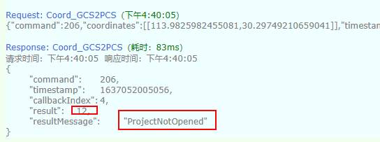
如果开启了日志，在WebSocket.log里也可以看到相关的日志记录：
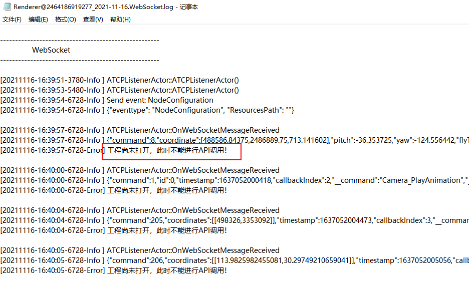
2021.11.08 增加实例访问权限功能
-
实例连接增加访问令牌
DigitalTwinPlayer对象初始化参数options增加属性token，用于设置实例访问令牌，如果服务设置了令牌，那么客户端需要提供正确的令牌才能连接实例。
2021.11.05 新增Light光源对象及相关操作方法
-
新增Light光源对象，相关操作方法如下：
- Light对象增加add()方法
- Light对象增加update()方法
- Light对象增加delete()方法
- Light对象增加get()方法
- Light对象增加clear()方法
- Light对象增加focus()方法
- Light对象增加hide()方法
- Light对象增加hideAll()方法
- Light对象增加show()方法
- Light对象增加showAll()方法
-
Beam对象新增显示/隐藏操作方法如下：
- Beam对象增加hide()方法
- Beam对象增加hideAll()方法
- Beam对象增加show()方法
- Beam对象增加showAll()方法
2021.11.02 TileLayer对象新增方法支持空间库查询
-
TileLayer对象新增方法：
- 新增：从空间库查询Actor详细属性方法 getActorInfoFromDB()
2021.11.01 TileLayer对象修复高亮多个Actor问题
-
高亮接口bug：
- 修复：高亮多个Actor方法highlightActors()
2021.10.25 完善示例，优化用户体验
-
完善实例管理接口的实例，增加KickPlayer示例
具体请参考manager.html
-
优化用户体验
视频流窗口的左上角增加闪烁的小圆点（状态指示器），从指示点的颜色可以判断当前的运行状态，当DigitalTwinPlayer对象初始化时showStartupInfo设置为false不显示启动信息的时候，这个指示点是很有用的。 具体含义请参考CloudStatus类型。
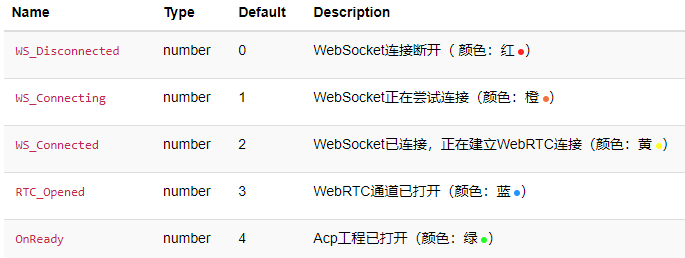
2021.10.18 Marker对象新增属性、RadiationPoint对象新增方法及优化部分接口
-
接口优化：
- 优化：包含亮度的所有对象，亮度参数统一命名为intensity
- 新增：Marker对象增加showLine属性
- 新增：RadiationPoint对象增加hideAll()和showAll方法
2021.10.15 Tools对象新增替换贴图纹理方法
-
Tools新增操作方法如下：
- Tools对象增加使用视频替换纹理方法：replaceTextureByVideo()
- Tools对象增加使用图片替换纹理方法：replaceTextureByImage()
- Tools对象增加使用网页替换纹理方法：replaceTextureByUrl()
- Tools对象增加恢复纹理方法：restoreTexture()
2021.10.12 资源文件支持相对路径
-
所有接口的中引用的资源文件支持相对路径了
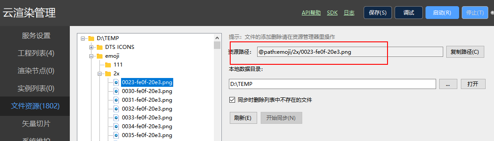
首先在CloudMaster的文件资源管理界面进行资源同步操作，之后就可以在API接口中使用相对路径了。
例如：
let o = {
id: 'p1',
coordinate: [495269.37, 2491073.25, 25.4],
imagePath: '@path:emoji/2x/0023-fe0f-20e3.png',
imageSize: [28, 28],
text: '北京银行',
};
fdapi.tag.add(o);
2021.10.08 修复Settings里设置交互开关bug
-
修复设置交互开关方法的bug
- setEnableInteract方法：设置交互开关，目前支持启用和禁用鼠标交互，禁用后可以通过API设置交互
2021.09.26 增加Camera对象获取导览缩略图方法
-
新增根据导览名称获取对应导览缩略图base64字符串方法，如下：
- Camera对象增加getAnimationImage()方法
2021.09.22 增加Marker3D对象及相关操作方法，TileLayer新增压平和新增挖洞操作方法
-
新增Marker3D对象，相关操作方法如下：
- Marker3D对象增加add()方法
- Marker3D对象增加update()方法
- Marker3D对象增加delete()方法
- Marker3D对象增加get()方法
- Marker3D对象增加clear()方法
- Marker3D对象增加focus()方法
- Marker3D对象增加hide()方法
- Marker3D对象增加hideAll()方法
- Marker3D对象增加show()方法
- Marker3D对象增加showAll()方法
-
TileLayer新增压平和新增挖洞操作方法
- TileLayer对象新增根据坐标添加压平addModifiers()方法
- TileLayer对象新增根据shapeFile路径添加压平addModifierByShapeFile方法
- TileLayer对象新增根据坐标添加挖洞addHole()方法
- TileLayer对象新增根据shapeFile路径添加挖洞addHoleByShapeFile方法
2021.09.18 Polygon3DStyle增加枚举类型
-
新增枚举类型取值说明：
- 单色无光照，SingleColor: 9
- 单色有光照，SingleColorWithLight: 10
2021.09.18 CustomObject和Polygon增加方法，蓝图函数增加坐标类型参数
-
对象增加方法：
- CustomObject对象增加setTintColor()方法：设置模型叠加颜色
- Polygon对象增加stopHighlight()方法： 取消对象高亮效果
-
蓝图函数CallBPFunction增加坐标类型参数
- 参数支持单个坐标和坐标数组
2021.09.16 完善DigitalTwinPlayer对象
-
完善三维键盘交互功能
之前的版本的键盘交互都是绑定到document对象，这样有个问题就是在页面输入时也会触发三维交互，影响体验。今天的版本在DigitalTwinPlayer初始化的options参数里增加了keyEventReceiver属性，用于设置键盘事件绑定，可设置的值为：'document', 'video', 'none'，二次开发可以根据应用场景选择合适的值。
-
增加视频流加载成功的回调方法
DigitalTwinPlayer初始化的options参数里增加了onloaded属性，可用于设置当视频流加载完成后的回调方法，具体请参考API文档和示例。
-
DigitalTwinPlayer对象增加resize方法
当自动布局无效时，可以手动调用此方法调整布局。
let options = { 'iid': iid, //如果想连接指定的云渲染实例，可以指定这个参数 'pid': pid, //工程ID 'domId': 'player', //DOM元素 'apiOptions': apiOptions, //DigitalTwinAPI初始化选项 'keyEventTarget': 'none', //三维键盘交互事件接收者，可选的值：document / video / none 'showStatus': true, //如果不需要，直接去掉showStatus属性即可 'showStartupInfo': true, //如果不需要显示启动信息，直接去掉showStartupInfo即可 'onclose': _onClose, //一般情况下不需要这个属性 'onloaded': () => console.log('video stream loaded.') } var aircityPlayer = new DigitalTwinPlayer(playerHost, options) -
实现工程切换接口
DigitalTwinPlayer增加方法setInstanceOptions，实现切换实例参数的功能。
调用此接口可以实现在不刷新页面的情况下切换实例参数
2021.09.15 修正Marker对象属性名称：dispalyMode
-
修改属性名称：
- 修改为displayMode
2021.09.08 TileLayer对象新增挖洞相关操作
-
TileLayer对象新增以下方法：
- TileLayer对象增加addHole()方法 : 新增挖洞操作
- TileLayer对象增加updateHole方法: 更新挖洞操作
- TileLayer对象增加deleteHole方法: 删除挖洞操作
- TileLayer对象增加clearHole方法 : 清空挖洞操作
2021.09.06 Marker和Tag对象增加属性，EditHelper和Tools删除相关参数
-
修改明细：
- Marker和Tag对象： 添加popupBackgroundColor 弹出层颜色透明度属性 （ array）
- EditHelper对象：setParam接口 删除参数 DrawType和DrawTickness
- Tools对象： setMeasurement接口 删除参数 LineSize
2021.09.02 增加ShapeFile对象及方法
-
ShapeFile新增以下方法：
- ShapeFile对象增加add()方法
- ShapeFile对象增加clear()方法
- ShapeFile对象增加delete()方法
- ShapeFile对象增加focus()方法
- ShapeFile对象增加get()方法
- ShapeFile对象增加hide()方法
- ShapeFile对象增加hideAll()方法
- ShapeFile对象增加show()方法
- ShapeFile对象增加showAll()方法
- ShapeFile对象增加update()方法
- ShapeFile对象增加open()方法
2021.08.30 添加方法
-
完善以下对象的方法：
- weather对象增加getDateTime方法
- camera对象增加getAnimationList方法
- tileLayer对象增加getActorInfo方法
2021.08.25 实例管理服务权限优化
-
优化了实例管理服务接口的权限
之前的实例管理服务是需要权限的，调用接口之前需要先登录才能正常调用，现在改成可选的了，如果部署的网络环境没有安全问题（比如内网部署），可以不用开启接口调用权限。
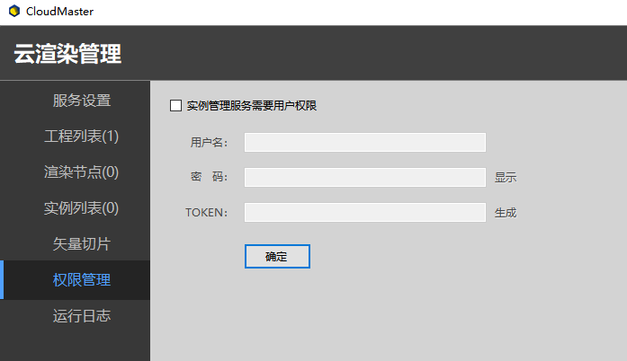
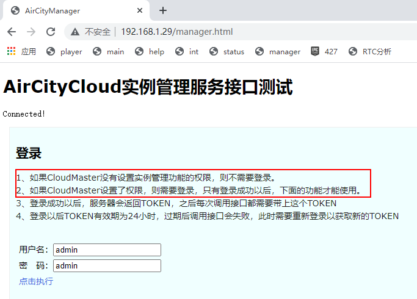
2021.08.23 时间模拟
-
Weather对象增加时间模拟的接口
weather.simulateTime(startTime, endTime, duration)
具体使用方法请参考接口帮助文档和示例代码。
2021.08.13 增加新接口
-
增加FloodFill和Cesium3DTile类
-
TileLayer增加获取图层详细信息的方法
tileLayer.getInformation
2021.07.22 重构Cloud接口调用方式
-
API调用同时支持WebSocket和WebRTC两种方式
Cloud的API调用默认是重用WebRTC通道，不需要单独设置端口号。如果想使用之前的WebSocket方式，也是可以的，现在可以同时支持这两种方式。开启WebSocket调用方式的方法如下：
-
在CloudMaster配置界面的实例编辑高级参数里开启：
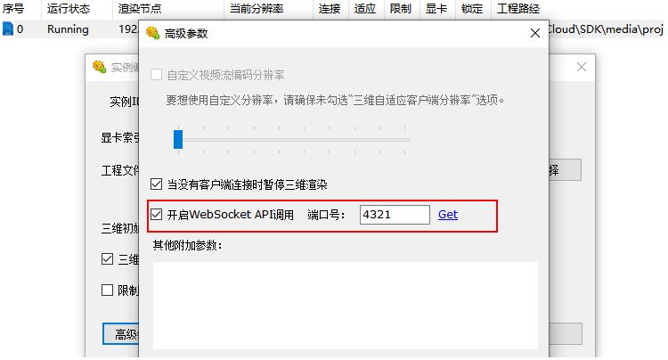
-
如果是通过实例管理服务的接口进行实例动态启停，可以在实例运行参数里加上websocketPort属性即可，具体使用方法请参考SDK/manager.html
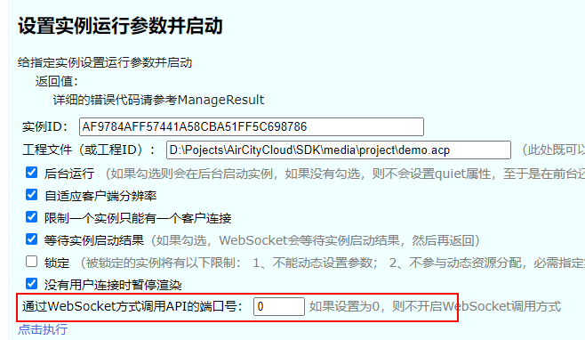
-
2021.07.21 水淹分析
-
实现水淹分析接口
tools对象增加方法：startFloodFill，stopFloodFill
-
支持WMTS
地图设置(settings.setMapMode)支持wmts，具体请参考API文档
2021.07.13 重构API和测试代码
-
重构对象的创建方式
之前的对象XX创建方式是通过XXData来创建的，比如创建标签（Tag），需要先simple.html然后设置调用tag.add，现在不需要用这种方式了，直接构造object即可，例如：
let o = { id: 'p1', coordinate: [495269.37, 2491073.25, 25.4], imagePath: HostConfig.Path + '/samples/images/tag.png', url: HostConfig.Path + '/samples/popup/simple.html', imageSize: [28, 28], text: '北京银行', range: [1, 8000.0], textRange: 3000, showLine: true, textColor: Color.Black, textBackgroundColor: Color.White, hoverImagePath: HostConfig.Path + '/samples/images/hilightarea.png', textSize: 10, autoHeight: true } await fdapi.tag.add(o); fdapi.tag.focus(o.id, 200, 0);SDK自带的测试代码已经全部换成这种创建方式。
注意：
以前的创建方式目前仍然可以继续使用，不过API文档已经移除了相关Data的注释，如果要查看之前的调用方式，请参考之前版本的API文档。
-
RadiationPoint对象增加属性：autoHeight
autoHeight：自动判断下方是否有物体，设置正确高度，默认值：false
2021.07.12 完善接口
-
完善CustomTag类的方法
CustomTagData增加属性popupPos，用于设置弹窗的位置。
2021.07.07 完善OnReady回调
-
解决onReady回调引起的接口调用问题
之前的onReady回调函数是在WebSocket连接成功时触发，这样有隐患，因为此时可能工程尚未加载完成，Explorer环境尚未准备好，如果此时调用接口，可能导致接口调用无效或者程序崩溃。
修改后的逻辑是：当工程加载完成后才会触发onReady回调。
注：用户不需要自己处理CompleteInitialization事件，SDK内部会自动处理，当收到CompleteInitialization事件时自动触发onReady回调。
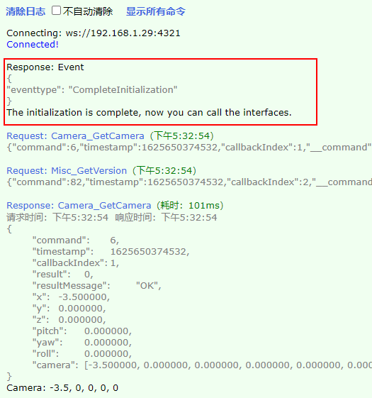
2021.07.01 DigitalTwinCloud重磅升级！！！
-
DigitalTwinCloud改变API调用方式
之前的版本是通过WebSocket方式进行API调用的，所以需要设置一个-websocketport参数，现在不需要这个参数设置了，改为直接通过WebRTC信道进行API调用。 这个改变只针对Cloud， 对于Explorer还需要之前的调用方式。
-
优化DigitalTwinPlayer、DigitalTwinAPI对象的初始化方式
之前的DigitalTwinAPI的构造函数是这样的：constructor(host, fnOnReady, fnLog);
重构之后的构造函数是这样的：constructor(host, options, reserved);
重构之后，仍然兼容之前的调用方式（建议改成新的调用方式）。具体请参考帮助文档以及API测试页面。需要注意的是：之前的第一个参数host可以传实例ID，重构之后的host参数只能使用ip:port这样的形式，不能再传实例ID。
示例代码：
//DigitalTwinAPI初始化选项 let apiOptions = { 'onReady': _onReady, 'onApiVersion': _onApiVersion, 'onEvent': _onEvent, 'onLog': log }; aircityApi = new DigitalTwinAPI(HostConfig.API, apiOptions);
之前的DigitalTwinPlayer构造函数是这样的：constructor(host, domId, token, showStatus, showStartupInfo);
重构之后的构造函数是这样的：constructor(host, options);
重构之后，仍然兼容之前的调用方式（不过建议改成新的调用方式）。具体请参考帮助文档以及API测试页面。需要注意的是：之前的第一个参数host可以传实例ID，重构之后的host参数只能使用ip:port这样的形式，不能再传实例ID。
对于Cloud应用可以不用显式的创建DigitalTwinAPI对象，只需要在DigitalTwinPlayer创建参数里指定apiOptions，就会自动创建。
示例代码：
let iid = getQueryVariable('iid'); let apiOptions = { 'onReady': _onReady, 'onApiVersion': _onApiVersion, 'onEvent': _onEvent, 'onLog': log }; //DigitalTwinPlayer let options; if (document.getElementById('player')) { //需要显示视频流 options = { 'iid': iid, //如果想连接指定的云渲染实例，可以指定这个参数 'domId': 'player', 'apiOptions': apiOptions, 'showStatus': true, 'showStartupInfo': true } } else { options = { 'iid': iid, //不带视频流的连接必须指定云渲染实例 'apiOptions': apiOptions }; } aircityPlayer = new DigitalTwinPlayer(HostConfig.Player, options); //对于Cloud应用可以不用显式的创建DigitalTwinAPI对象，只需要在DigitalTwinPlayer创建参数里指定apiOptions，就会自动创建。 aircityApi = aircityPlayer.getAPI();
-
支持内网穿透功能
之前的版本只能在有公网IP的机器上部署云渲染，这样有了很大的限制。 现在可以支持在任意网络环境中部署云渲染了。
-
支持分布式部署
之前的版本云渲染相关的所有功能组件都必须在一台机器上部署，现在可以分布式部署了，比如在内网只部署云渲染节点，服务功能放在有公网IP的机器上。当用户连接的时候，可以自动分配空闲的云渲染实例，也可以指定访问特定的实例。
2021.06.30 设置交互模式
-
settings对象增加设置交互模式的方法
setInteractiveMode(mode, fn)
mode 交互模式，0：自由，1：第三人称，2：无人机
-
Polyline, Polygon的样式增加“贴地模式”
Polyline, Polygon之前的样式现在可以用枚举值了 ，具体请参考API文档。
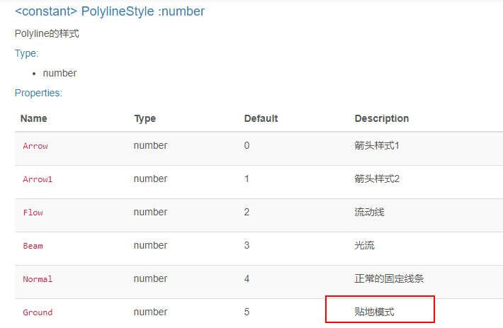
-
TileLayer增加新的方法
-
增加设置视口可见性的方法：setViewportVisible
-
增加获取指定TileLayer的所有ObjectID的方法：getObjectIDs
-
-
增加相机移动事件的开关
settings对象增加setEnableCameraMovingEvent方法
CameraMoving事件默认不再触发，如果需要触发CameraMoving事件，可以调用settings.setEnableCameraMovingEvent(true)来实现。
-
增加新的功能类
- 增加CustomMesh类
- 增加新的标注类（标注类比之前的标签类tag功能更加强大）
2021.05.25 增加接口
-
settings对象增加交互开关
fdapi.settings.setEnableInteract(bEnable)
用来设置交互开关，包括键盘、鼠标、触摸，如果禁用，只能通过接口控制相机
-
增加设置指北针是否可见的接口
fdapi.settings.setCampassVisible
-
Tag对象增加属性：autoHeight, textSize
autoHeight: 自动判断Tag下方是否有物体，设置tag的正确高度
textSize：设置标签文本大小
-
camera对象增加pauseAnimation, resumeAnimation方法
可用于暂停、恢复播放动画导览。
2021.04.28 优化API版本信息接口
-
云渲染服务器返回的版本号增加类型字段，用于区分软件的版本，例如Trunk/Master/Cluster等。
通过版本类型和版本字段组合，更加唯一的确定了当前所使用的API版本。
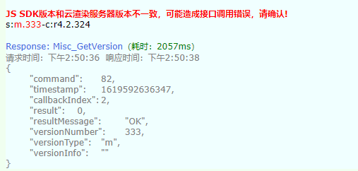
-
tag对象增加2个属性：popupPos、popupSize，用于设置弹出窗口的位置和大小
注意：这2个属性不在TagData的构造函数中，需要创建TagData后再设置
数据类型：
popupPos: [x, y]
popupSize: [width, height]
-
增加启动进程的方法
misc对象增加startProcess方法，用于调用系统进程，例如用系统浏览器打开一个网页，调用系统中的某个程序执行需要的功能等。
具体请参考测试页面int.html
2021.04.23 TileLayer压平
-
增加TileLayer压平操作相关的接口
tileLayer对象增加以下方法：
addModifier、updateModifier、deleteModifier、clearModifier
-
优化视频流自适应功能
云渲染视频流最大支持4K， 当页面video元素大小超过4K时，按比例进行缩放，比如8000x2000的大小，则云渲染后台的分辨率为：3840x960。
2021.04.16 设置码率
-
DigitalTwinPlayer对象增加设置码率的接口
setBitrate(maxBitrate)
参数为最大码率，默认值为30000，可以根据自己的实际情况设置为合适的值。
SDK的测试页面player.html, main.html，可以通过url参数进行设置， 例如 http://192.168.1.29/player.html?bitrate=15000
2021.04.12 优化tools对象
-
天际线分析方法增加属性
startSkylineAnalysis方法的options参数增加tileLayers属性
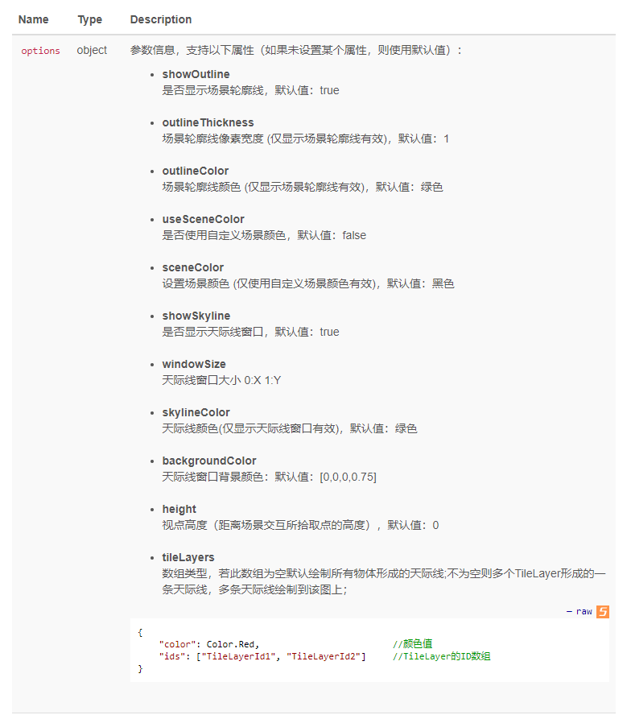
exportSkyline方法去掉skylineColor和backgroundColor参数，增加options参数
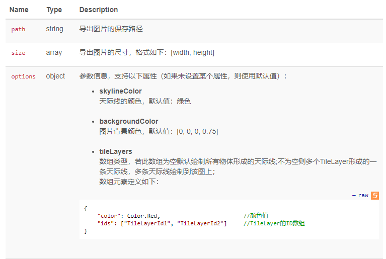
-
增加设置鼠标拾取功能的方法
misc对象增加setMousePickMask方法，之前的setQueryToolState方法已弃用。
2021.04.08 统一方法名
-
统一tools对象的测量、剖切、分析接口的方法名
都以start和stop为前缀，具体如下：
createSkyline ---> startSkylineAnalysis
deleteSkyline ---> stopSkylineAnalysis
createViewshed ---> startViewshedAnalysis
deleteViewshed ---> stopViewshedAnalysis
-
解决无法手动调整视频流大小的BUG
手动设置大小和自动调整大小只能二选一。
具体请参考player_resize.html
-
添加相机控制接口
camera对象增加以下方法，用于控制相机：前进、后退、左移、右移、上升、下降、左转、右转、抬头、低头以及停止。
moveForward
moveBackward
moveLeft
moveRight
moveUp
moveDown
turnLeft
turnRight
turnUp
turnDown
stop
2021.04.02 添加天际线和视域分析功能
-
tools对象增加天际线分析功能
tools对象增加以下方法：
- createSkyline 创建天际线
- deleteSkyline 删除天际线
- exportSkyline 导出天际线
-
tools对象增加视域分析功能
tools对象增加以下方法：
- createViewshed 开始视域分析
- deleteViewshed 停止视域分析
注意：
以前的视域分析功能(fdapi.viewshed)已弃用
2021.03.23 接口改名
-
坐标转换方法改名
proj2Geo ---> pcs2gcs
geo2Proj ---> gcs2pcs
2021.03.22 优化实例管理接口、增加剖切功能
-
设置实例参数的接口增加了参数"async"，
用于设置接口是异步调用还是同步调用，命令格式如下：
var o = { 'command': CommandType.SetInstanceParams, 'async': true, 'instanceId': instanceId, 'projectPath': projectPath, 'adjustResolution': adjustResolution, 'limitOneClient': limitOneClient } __ws.send(JSON.stringify(o));async参数是可选的，如果设置为true，那么立即返回结果，如果设置为false或者没有此参数，会等待实例启动结果，然后再返回。（也就是说此接口默认会等待）
-
实例管理服务增加错误代码
const WSErrorCode = { OK: 0, NoInstance: 1, //没有可用的实例 InstanceNotFound: 2, //没有找到指定的实例 InstanceNotRunning: 3, //指定的实例没有在运行 ProjectPathNotExist: 4, //工程文件不存在 AsyncProcessing: 5, //异步处理中... StartInstanceFailed: 6, //实例启动失败 MaxCode: 255 };- AsyncProcessing：异步操作进行中，比如SetInstanceParam命令，如果设置了aysnc为true，那么返回的错误代码就是AsyncProcessing，说明实例正在启动
- StartInstanceFailed：启动实例失败
-
增加剖切相关的接口
增加面剖切和体剖切相关的功能接口
startPlaneClip、stopPlaneClip
startVolumeClip、stopVolumeClip
之前的stopClip方法已过期
暂时可继续使用，建议用stopPolygonClip代替。
2021.03.19 重构异步调用
-
实现接口异步调用的三种方式
三种方式：callback、then、async/await
使用方法请参考：二次开发：异步接口调用方式
-
优化设置相机的接口：camera.set
现在camera.set方法可以传递三种类型的参数了
使用方法请参考：二次开发：关于设置相机位置的三种形式
-
统一所有接口的返回值
之前对tag.get, polyline.get等这些对象的get方法的回调函数的返回值进行的特殊处理，现在进行了统一，对于使用async/await方式进行异步调用，所有的接口返回值都是一样的了，就是在int.html里调用接口后显示的Reponse输出内容
以tag.get举例，调用方式如下：
async function test_tag_get() { let res = await fdapi.tag.get('p1'); let o = res.data[0]; log(`获取标签：\n id: ${o.id} \n text: ${o.text}`); } 或者： function test_tag_get() { fdapi.tag.get('p1', function(res){ let o = res.data[0]; log(`获取标签：\n id: ${o.id} \n text: ${o.text}`); }); }运行上面的代码后，res参数就是下面的JSON对象：
{ "command": 90, "timestamp": 1616134672222, "callbackIndex": 3, "result": 0, "resultMessage": "OK",simple.html "data": [{ "id": "p1", "groupId": "", "userData": "", "coordinate": [495269.343750, 2491073.250000, 25.400000], "imageSize": [28.000000, 28.000000], "url": "D:\\Pojects\\DigitalTwinCloud\\SDK/simple.html", "imagePath": "D:\\Pojects\\DigitalTwinCloud\\SDK/images/tag.png", "hoverImagePath": "D:\\Pojects\\DigitalTwinCloud\\SDK/images/hilightarea.png", "text": "北京银行", "textColor": [0.000000, 0.000000, 0.000000, 1.000000], "textBackgroundColor": [1.000000, 1.000000, 1.000000, 1.000000], "textBorderColor": [0.000000, 0.000000, 0.000000, 0.000000], "range": [1.000000, 8000.000000], "textRange": 3000.000000, "showLine": 1, "autoHidePopupWindow": 1 }] }
2021.03.18 重构JS库完善API接口
-
增加获取图层数信息的接口
调用方法：
fdapi.infoTree.get((response) => { let str = response.infotree; let o = JSON.parse(str); log(JSON.stringify(o)); });回调返回的数据格式如下：
{ "command": 217, "timestamp": 1615272910405, "callbackIndex": 3, "result": 0, "infotree": [{ "iD": "ProjectTree_Root", "index": 0, "parentIndex": -1, "name": "世界", "type": "EPT_Folder" }, { "iD": "D18ABAB9405A2AC58E6D49BF28A86706", "index": 1, "parentIndex": 0, "name": "EmergencyRoom_UniversalKey", "type": "EPT_Scene" }, { "iD": "8F4AD37744DCF514E62EED80BA6D4064", "index": 2, "parentIndex": 0, "name": "SDKDemo", "type": "EPT_Scene" }, { "iD": "8E543D9B427BE68A2726C380501D6DC2", "index": 3, "parentIndex": 0, "name": "building", "type": "EPT_Scene" }] }
-
playMovie方法增加loop参数，用于指定是否循环播放
fdapi.misc.playMovie('c:/media/courier.mp4', true);
-
增加reset方法
fdapi.reset();调用后可以将场景重置到刚打开工程的状态。
-
重构JS库以支持VUE开发
点击查看 API_Vue
-
DigitalTwinCloud对象改名为DigitalTwinAPI，现在的调用方法如下：
var api = new DigitalTwinAPI(...);为了保持兼容，DigitalTwinCloud还可以继续使用，
var api = new DigitalTwinCloud(...);
-
重构JS库，现在支持在同一个HTML页面创建多个云渲染实例了
具体使用方法请参考在一个页面中嵌入多个云渲染窗口
-
完善CustomObject类的方法
增加了以下几个方法：（具体参数请参考API修改记录）
-
addByTileLayer：从TileLayer图层添加CustomObject对象 -
highlight：高亮 -
unhighlight：取消高亮 -
callFunction：调用CustomObject对象的蓝图函数 -
focus：该方法距离参数功能增强
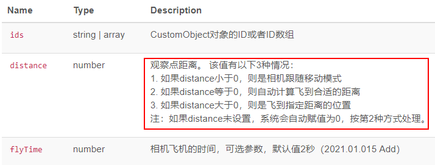
-
-
配置工具增加使用样例功能的功能：
首次使用DigitalTwinCloud或者想学习接口使用方法，查看示例代码的时候可以选择样例功能。
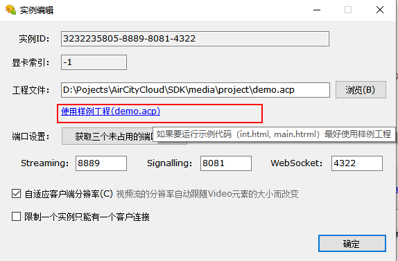
-
回调函数返回的JSON数据里增加resultMessage属性，用于只是错误代码的信息
{ "command": 255, "timestamp": 0, "callbackIndex": 0, "result": 7, "resultMessage": "InvalidRequestType" } -
统一Camera的Get/Set方法的参数
-
camera的get方法返回的信息由之前的x, y, z, heading, tilt, roll调整为x, y, z, pitch, yaw, roll和数组
set/lookAt/lookAtBBox方法的参数也做了对应的调整，参见下面第2条说明
-
camera增加useOldDataFormat方法
用于设置是否使用旧版本的数据格式（2021.03.17之前的版本），这是一个全局的设置。
受影响的方法有：camera对象的set、lookAt、lookAtBBox，以camera.set举例：
之前版本的方法定义如下：(x, y, z, heading, tilt, flyTime, fn)
现在的定义如下：set(x, y, z, pitch, yaw, flyTime, fn)
两个的区别就是heading(yaw), tilt(pitch)的顺序互换了一下
如果调用了useOldDataFormat()，可以让用户代码保持兼容（不用修改就可以在新版本上运行）
-
2021.03.05 完善坐标系-增加动态水接口
-
coord对象增加坐标系转换接口：geo2Proj, proj2Geo
geo2Proj: 地理坐标转投影坐标
proj2Geo: 投影坐标转地理坐标
-
object的派生类支持使用经纬度创建了
目前支持一下对象使用经纬度创建： tag、customTag, polyline, odline, polygon, polygon3D, beam, radiationPoint, videoProjection, viewshed
以tag为例，在构造TagData后，设置coordinateType为WGS84即可，例如：
let o = new TagData('tag1', ....);
o.coordinateType = 1;
fdapi.tag.add(o);
-
增加quit方法，可以调用此方法退出程序
fdapi.quit();
-
完善tileLayer对象的stopHighlightActor方法
之前的stopHighlightActor是取消场景里所有相关的高亮，现在可以传递参数，取消指定tileLayer、指定actor的高亮了。
fdapi.tileLayer.stopHighlightActor(tileLayerId, tileLayerActorObjectId);
如果想取消所有的高亮，可以调用__g.tileLayer.stopHighlightActor(); 或者 fdapi.tileLayer.stopHighlightActors();
-
增加动态水接口：dynamicWater
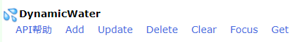
2021.03.01 CameraTour
-
CameraTourData类的构造函数去掉duration和userData参数
现在的调用方式如下：
let data = new CameraTourData('1', 'tour1', keyFrames);
-
tools对象增加lineIntersect方法，进行线段求交。
2021.02.04 优化完善配置工具
-
配置工具进行了功能完善
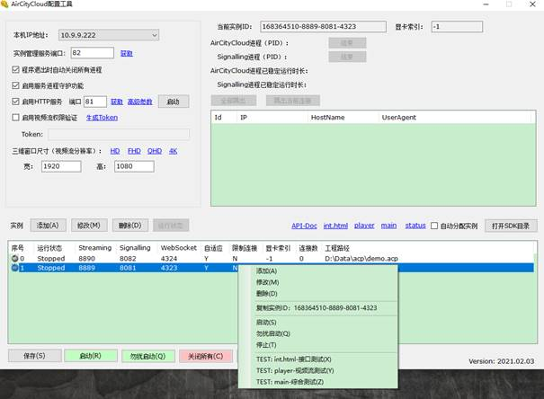
-
现在可以单独对每一个实例进行启动、停止了
-
实例增加了标识符(ID)
-
实例列表增加了运行状态显示（实时的）
-
多显卡的机器可以自动给实例分配到合适的显卡上
-
完善实例管理服务相关的接口
2021.01.18 VideoProjection
-
VideoProjectionData去掉mediaType参数
现在不需要再设置视频类型了，内部自动会判断。
-
配置工具增加单独启动HTTP服务的功能
2021.01.10 增加视域功能
-
新增Viewshed对象
-
TileLayer对象增加setStyle方法，可以设置图层的样式
2020.01.08 增加Tools类
-
新增了 tools工具类，
增加测量相关的方法：setMeasurement / enterMeasurement / exitMeasurement / finishMeasurement
可以拾取坐标点、直线测量、水平/垂直测量、面/体测量等。（具体请参考帮助文档）
-
misc类里的挖洞接口startPolygonClip、stopClip转移到 tools类
2020.01.05 设置相机接口的默认值
-
camera对象的set, lookAt, lookAtBBox三个方法的参数heading, tilt 现在是可选的了，如果没有设置，系统会自动计算合适的默认值。
-
camera对象的set, lookAt, lookAtBBox以及object对象的focus、focusAll增加参数：flyTime，可以设置相机飞行时间，默认值2秒
2020.12.25 全屏播放视频
-
misc对象增加全屏播放视频的功能
为了提高播放性能，在播放的过程中，三维渲染会自动停止。
fdapi.misc.playMovie(url);
fdapi.misc.stopMovie();
-
增加全景图对象：Panorama
可以指定坐标，图片路径，可以增删改，可以focus。
-
增加贴画对象：Decal
可以指定图片，中心点，旋转缩放信息等，也可以focus。
2020.12.15 统一TileLayer拾取事件
-
Tilelayer拾取事件返回信息：
ID应该就是tilelayer的ID
ObjectID应该是一个对象的唯一标识，不同类型数据发布的3dt含义有点区别，具体如下：
-
xml+osg：ObjectID就是xml里的
属性，应该是个GUID字符串 -
rvt文件：ObjectID就是revit里每个构件的GUID
-
美工工程发布3dt：ObjectID就是UE工程里actor的NameID
另外之前拾取事件返回的Name信息可以去掉了，那是历史遗留问题，现在统一用ObjectID信息
-
-
layers对象更名为infoTree
之前通过__g.layers调用的接口为了兼容依然可以继续使用
-
layers对象去掉setVisibility， enableXRay, disableXRay这3个方法
-
解决几个接口相关的BUG:
-
polygon填充色无效
-
customTag弹出窗口无法隐藏的BUG
-
customObject无法显示的BUG
-
2020.12.13 TileLayer挖洞
-
增加TileLayer挖洞相关的接口
-
misc对象增加2个方法：startPolygonClip和stopClip，用于对TileLayer进行多边形挖洞StartPolygonClip的坐标参数支持多Part Polygon，与Polygon、3DPolygon、HighlightArea对象创建时传递的坐标数组参数一样。
-
tileLayer对象增加2个方法：enableClip, disableClip，用于设置指定的TileLayer是否参与挖洞
-
2020.12.08 Polygon增加属性
-
polygon增加2个属性：brightness和style
-
优化安装程序，去掉python依赖
2020.12.02 显示隐藏植物
- misc类增加ShowAllFoliage和HideAllFoliage接口，用来显示 隐藏Explorer里创建的植物。
2020.11.23 polyline增加shape
- polyline增加属性：shape,取值：0或1， 0：直线， 1：曲线
2020.11.06 Polygon格式-相机导览
-
misc对象增加进入、退出汇报演示的接口：
enterReportMode
exitReportMode
-
Polygon、3DPolygon可以创建多Part以及带内环的样式了，
在创建时，通过给coordinates参数传递不同的格式即可，具体请参考API帮助文档。
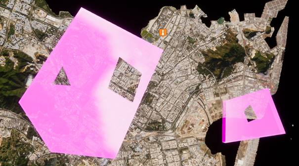
-
增加cameraTour对象，可以创建相机导览
2020.10.29 崩溃-拾取-标签窗口
-
增加CustomObject拾取事件，可以返回创建时传递的ID
-
解决3D Polygon调用显示接口崩溃的BUG
-
优化标签弹出窗口的显示方式
之前是点击个标签弹出一个新窗口，现在是所有点击共享一个窗口，当点击另外一个标签时，之前的窗口隐藏，然后在点击处显示一个窗口。
2020.10.26 depthTest-移动端视频流
-
Polyline和Polygon对象增加是否做深度检测的属性depthTest，默认是true。（DepthTest=true应该会被遮挡，false的话不会被遮挡）
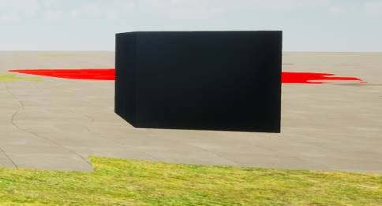
（depthTest为true）
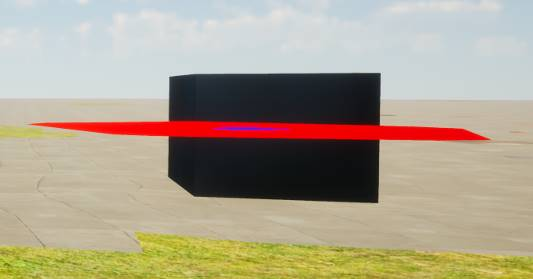
（depthTest为false）
-
解决DigitalTwinCloud视频流在移动设备上无法正常显示的BUG：
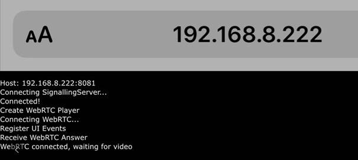
2020.10.20 withOffset
-
EditHelper.Finish方法增加withOffset参数
用于设置是否计算工程中心偏移，默认值是true。
2020.10.14 增加接口-工具自适应
-
增加EditHelper接口，实现用户手动绘制线、面等几何类型。可以通过__g.editHelper进行调用
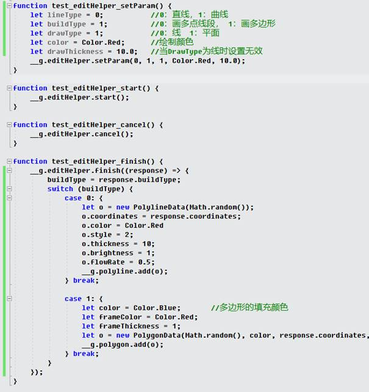
-
配置工具增加配置选项：
-
可以设置是否开启视频流自适应客户端分辨率的功能
-
可以设置是否限制一个实例只允许一个用户连接，默认是勾选的。 当超过一个客户端连接的时候，客户端会提示错误： ws close 4001: Only allow one client
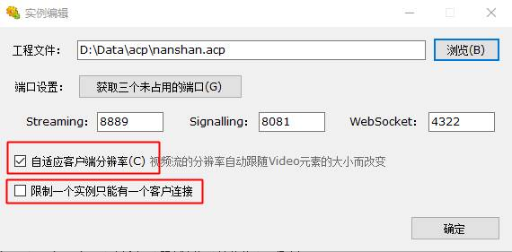
-
Layers对象增加接口： ShowByGroupId、 HideByGroupId、 HighlightByGroupId、 DeleteByGroupId。
在创建对象的时候，可以设置groupId属性，然后就可以通过上面的接口进行批量显隐、删除、高亮。
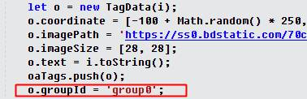
-
对象增加userData属性，在创建对象时，可以设置userData属性，通过get获取时，可以返回当初设置的userData，例如：
let o = new TagData();
o.id="tag1";
o.userData = "用户自定义数据";
...
-
完善视频流的自适应机制，
在一个实例允许多个客户端连接的时候，当连接数大于1时，所有客户端会自动停止视频流大小自适应，直到关闭其他页面只剩下一个连接时，才会重新自适应。
-
Polygon3D接口增加2个属性：tillingX， tillingY
-
DigitalTwinCloud接口增加方法：highlightColor，用于设置高亮时的颜色
fdapi.highlightColor(Color.Red);
-
TileLayer增加ShowAllActor和HideAllActor接口
function test_tileLayer_actor_showAllActors() {
fdapi.tileLayer.showAllActors('1');
}
function test_tileLayer_actor_hideAllActors() {
fdapi.tileLayer.hideAllActors('1');
}
2020.09.28 VectorTile管理
-
DigitalTwinCloud配置工具增加VectorTile发布结果管理功能
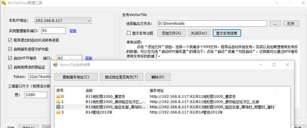
2020.09.23 黑暗模式
-
Weather接口增加设置黑暗模式的功能
fdapi.weather.setDarkMode(true);
调用上面接口后，天空会进入黑暗模式
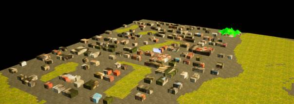
2020.09.22 优化Polygon创建效率
-
DigitalTwinPlayer对象增加方法enableAutoAdjustResolution，
可以设置启用或关闭视频窗口缩放时自动调整分辨率的功能。这个功能默认是启用的，如果想关闭此功能，可以在初始化的时候调用enableAutoAdjustResolution(false)
let acp = new DigitalTwinPlayer(HostConfig.Player, 'player', HostConfig.Token, true, true);
acp.enableAutoAdjustResolution(false);
-
优化Polygon创建
当Polygon的定点数组过大时，创建速度非常慢，优化后创建速度大大提高
另外Polygon的属性frameThickness之前的单位是cm，现在改成了m，当frameThickness设置为0时，不会创建边框（轮廓）了。
-
优化测试页面index.html， int.html
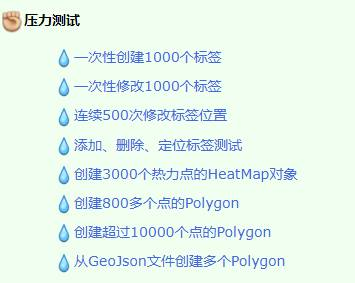
2020.09.18 视频播放-ODLine
-
增加视频播放窗口
fdapi.misc.playVideo(1, 20, 20, 400, 300, 'd:/data/video/1.mp4');
fdapi.misc.stopPlayVideo(1);
-
增加ODLine对象
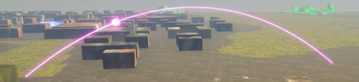
-
视频流窗口缩放时，可以自动改变后台渲染窗口大小，以达到自适应分辨率的效果
2020.09.09 视频投影
-
增加视频投影对象VideoProjection
let o = new VideoProjectionData();
o.id = "vp1";
o.videoURL = "d:/data/video/1.mp4";
o.mediaType = 0;
o.location = [66.14, -7288.16, 9.47];
o.rotation = [-50, 0, 0];
o.fov = 90;
o.aspectRatio = 1.77;
o.distance = 100;
fdapi.videoProjection.add(o);
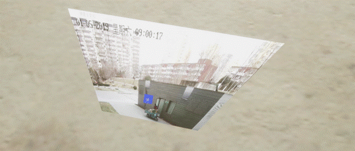
2020.09.02 tiling-hoverImagePath
-
Polyline（PolylineData）增加 tiling属性，
用于设置材质贴图平铺，这个值 <= 0 使用自动计算按Polyline长度比例平铺， >0使用用户输入的值去平埔
-
Tag（TagData）增加 hoverImagePath 属性，
用于设置鼠标悬停时的图片
2020.08.28 样式-安装包
-
3D Polygon增加样式
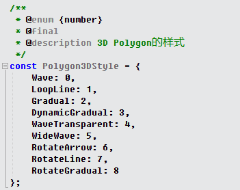
-
修改安装包的默认安装位置：由Program Files修改为AppData， 因为Program Files文件夹没有写入权限
2020.08.26 安装包目录结构
-
DigitalTwinCloud目录结构改变，增加Tools文件夹
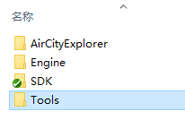
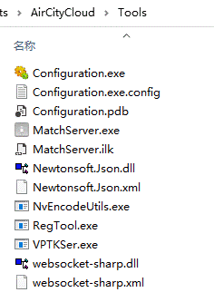
2020.08.21 增加Polyline对象
-
增加Polyline对象
let coords = [[2084.75, -8474.21, 5.7], [2133.45, -8556.37, 5.7], [2270.38, -8499.91, 5.7], [2278.18, -8436.39, 5.7], [2152.5, -8361.8, 5.7]];//多边形的坐标数组
let color = [0, 0, 1, 1];//多边形的填充颜色
let o = new PolylineData('p1', color, coords);
fdapi.polyline.add(o);
显示效果：
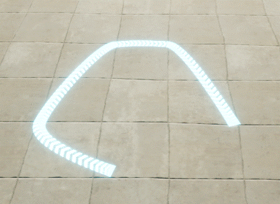
2020.08.14 增加CustomTag对象
-
接口的简化别名：
-
g.tileLayer 的别名： g.tl
-
g.customTag的别名： g.ctag
-
g.radiationPoint的别名： g.rp
-
g.highlightArea的别名： g.ha
-
g.customObject的别名： g.co
-
增加CustomTag，可以创建HTML样式的标签
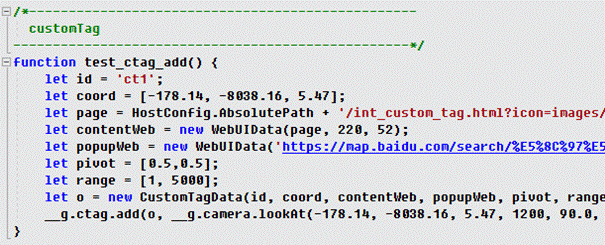
显示效果：
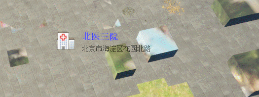
CustomTag的背景可以设置透明度，在需要透明的地方设置CSS属性background-color为rgba颜色即可。
background-color: rgba(255, 255, 255, 0);
2020.08.07 Polygon样式-Tag可见距离
-
Polygon增加设置边框颜色和厚度的属性：frameColor、frameThickness
let coords = [[2084.75, -8474.21, 5.7], [2133.45, -8556.37, 5.7], [2270.38, -8499.91, 5.7], [2278.18, -8436.39, 5.7], [2152.5, -8361.8, 5.7]];//多边形的坐标数组
let color = [0, 0, 1, 1];//多边形的填充颜色
let frameColor = Color.Red;
let frameThickness = 500;
let o = new PolygonData('1', color, coords, frameColor, frameThickness);
fdapi.polygon.add(o);
运行效果：
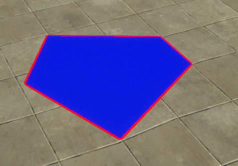
-
tag增加文字的最大最小可见距离属性
也就是说图片和文字要能分别设置最大最小可见距离。图标和文字的可见距离分开主要是为了解决这种文字挤到一起的问题，例如：
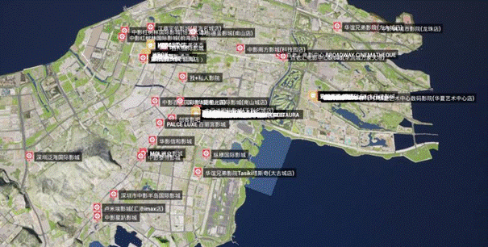
图标的可见距离可以设远点，文字的可见距离设近点，离远了能看到图标，近了再显示出文字。当然鼠标移到标签的图标上不关多远都会显示文字。
2020.08.05 truesky
-
支持truesky
-
完善heatmap
2020.08.03 初始化日志-beam-token
-
实现视频流初始化过程中的日志显示，此功能有以下几个好处：
-
方便的看到视频流初始化过程，用户就不会再盲目的等待了
-
如果有错误发生，也可以看到是哪个地方出现问题
视频流连接成功出现三维画面的时候，日志窗口会自动隐藏
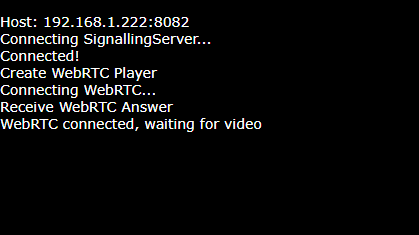
如果不需要此功能，可通过接口关闭：
new DigitalTwinPlayer(HostConfig.Player, 'player', HostConfig.Token, true, true);
第4个参数是控制左下角“显示信息“ 按钮的可见性
第5个参数控制视频流初始化过程中日志窗口的可见性，如果设置为false，则不可见，如果设置true或者未设置，则可见。
-
Beam线宽修改，现在的取值范围：[0.01, 100]
下图是宽度0.2的效果：
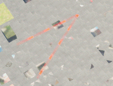
调用 fdapi.beam.setThickness('1', 5); 将宽度设置到5后的效果：
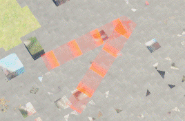
-
vedeo标签的样式去掉 position:absolute
-
恢复之前的Token机制
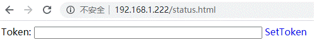
2020.07.22 增加CustomObject对象
-
增加CustomObject接口
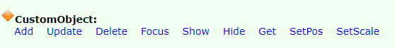
2020.07.15 TileLayer增加Actor方法
-
TileLayer接口增加以下方法
其中单数的方法用于对一个TileLayer Actor进行操作，复数方法可以对多个Actor操作，方法中的data是TileLayerActorData类型的数组：
TileLayerActorData构造函数接受2个参数：
第1个参数是TileLayer的ID，第2个参数是Actor Name的字符串数组，可以对多个TileLayer的多个Actor进行操作。
-
增加settings接口，实现以下3个方法
setMapMode, getMapMode, setMapURL
-
配置工具增加发布VectorTile功能
-
修复拾取事件中的拼写错误：（TileLyaer）
2020.07.10 实现可视化配置工具
-
实现可视化配置工具
-
class Explorer 改名为 DigitalTwinCloud
-
DigitalTwinCloud和DigitalTwinPlayer两个类增加 destroy方法，
调用destroy()方法后，会断开当前的连接， 并且不会再尝试重连
测试页面：int.htm, index.htm, player.htm
-
重构Token机制， 现在Token值保存在config.json文件里，并且可以通过可视化配置工具进行设置
-
视频流信息窗口相关接口
DigitalTwinPlayer构造函数增加了一个参数，用来设置是否在左下角显示控制显隐信息窗口的超链接
如果这个参数设置为true， 会在左下角显示一个超链接 “显示信息”， 点击可以显示详细的视频流信息。
2020.07.09 实现C# SDK
-
【C#】实现Aircity的C# SDK，接口、方法、参数与JS基本完全一致
-
【C# & JS】所有的focus, focusAll方法，distance都可以省略了（也可以传递0值），程序会自动定位到一个合适的位置，几种用法如下：
fdapi.tag.focus('p1'); //自动计算距离
fdapi.tag.focus('p1', 200);
fdapi.tag.focus('p1', 0); //自动计算距离
fdapi.tag.focus('p1', 0, ()=>{
//如果带回调函数，又想自动计算合适的距离，distance可以传递0值
})
-
【C# & JS】MathServer可以通过配置文件控制AircityCloud.exe的窗口大小（视频流的分辨率）了。
-
【JS】去掉对event的封装，直接返回服务器信息。
去掉以下类型：EventType， MouseButtonType， TagEventParam， ActorEventParam
-
【C# & JS】完善Actor事件的返回的信息格式
2020.07.01 接口时间戳
-
每个请求都加了一个参数时间戳
除了是为了计算接口调用时间，更重要的功能是为了解决客户端回调的问题，如果没有时间戳，客户端在多个地方调用同一个接口就无法正确的判断是哪次发出的请求收到的结果。
-
丰富颜色值的设置
之前的接口只能传递一种格式的颜色值：[1,0,1,1]，现在设置颜色的参数，都可以传递以下类型的颜色值了
1）RGB格式的颜色值
显示效果：
2）十六进制的颜色值
显示效果
3）预定义的颜色常量
显示效果
预定义的常量值请参考：
https://www.sioe.cn/yingyong/yanse-rgb-16/
-
对象重命名
Tag -> TagData
Beam -> BeamData
TileLayer -> TileLayerData
HighlightArea -> HighlightAreaData
Polygon -> PolygonData
Polygon3D -> Polygon3DData
HeatMapPoint -> HeatMapPointData
RadiationPoint -> RadiationPointData
ImageButton -> ImageButtonData
AnimatedImageButton -> AnimatedImageButtonData
LayerVisibility -> LayerVisibleData
-
实现对象的get接口，例如
fdapi.tag.get( 'p1' );
fdapi.tag.get( ['p1', 'p2'] );
对于回调函数，如果获取的是一个对象的信息，那么回调函数的参数就是这个对象； 如果获取的是一组对象的信息，那么回调函数的参数是一个map，map的key是对象的id, value是对象的数据
-
实现属性的set接口
拿标签对象举例：
这些set方法有两种使用方式：
（1）直接调用这些set方法，会立即生效
（2）在调用这些方法之前，先调用updateBegin，这些set方法会将修改临时保存，等调用updateEnd的时候，一次性的提交修改。这种方式适合一次大批量修改属性的时候用，可以大大提高性能。
2020.06.23 接口版本号
-
misc接口增加两个属性：apiVersion, sdkVersion
apiVersion：AircityCloud提供的WebSocket接口的版本号
sdkVersion：javascript SDK的版本号
misc接口增加一个setApiVersionReceived的方法，用户可以通过这个方法设置回调，用以判断SDK的版本是否与云渲染服务器的版本一致
2020.06.16 增加focus方法
-
几个focus方法支持支持传递ID数组（也可以传递单个ID），影响的接口：
polygon3d.focus
polygon.focus
beam.focus
tag.focus
highlightArea.focus
使用方法：
(1) fdapi.tag.focus(1, 1000.0);
(2) fdapi.tag.focus([1, 2, 3], 1000.0);
(3) fdapi.tag.focus("1", 1000.0);
(4) fdapi.tag.focus(["1", "2", "3"], 1000.0);
ID可以使用数字也可以使用字符串，SDK内部统一用字符串处理。
-
接口增加新的方法：
tag接口增加以下方法：
1、focusAll(distance)
2、show(ids)
3、hide(ids)
4、showAll()
5、hideAll()
radiationPoint接口增加以下方法：
1、focus(ids, distance)
2、focusAll(distance)
3、show(ids)
4、hide(ids)
polygon接口增加以下方法：
1、show(ids)
2、hide(ids)
polygon3d接口增加以下方法：
1、update(data)
2、clear()
3、focus(ids)
4、show(ids)
5、hide(ids)
6、highlight(ids)
7、glow(ids, duration)